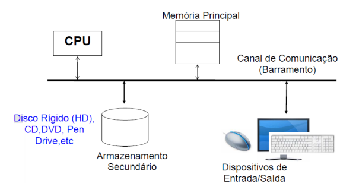

Arquitetura de Computadores e Sistemas Operacionais¶
Introdução, Abstração e Tecnologia do Computador¶
Um computador é formado pela combinação de hardware (HW) — a parte física da máquina, como chips, monitores e teclado — e software (SW) — os programas e dados que rodam sobre esse hardware, como sistemas operacionais, compiladores e editores de texto. Nenhum dos dois é útil isoladamente: o hardware sem software não sabe o que fazer, e o software sem hardware não tem onde executar.
Classes de computadores¶
Computadores modernos se dividem, grosso modo, em três grandes classes, cada uma otimizada para um conjunto diferente de restrições:
| Classe | Características | Prioridades de projeto |
|---|---|---|
| Desktop | Computador pessoal de desempenho genérico. | Bom desempenho a baixo custo; flexibilidade, versatilidade e conectividade. |
| Servidores | Executam aplicações mais complexas, atendendo muitos usuários simultaneamente; inclui a classe dos supercomputadores. | Grande poder de armazenamento e processamento. |
| Embarcados | Sistemas de computação integrados a dispositivos maiores (celulares, carros, televisões) com forte integração com o hardware. | Robustez (usados em aplicações críticas); otimizados para bom desempenho com custo e energia reduzidos. |
Arquitetura x Organização¶
Um ponto central para estudar computadores é distinguir dois níveis de descrição que, no dia a dia, costumam ser confundidos:
Arquitetura
Refere-se aos atributos do sistema visíveis ao programador, que têm impacto direto na execução lógica de um programa — o conjunto de instruções (ISA), os modos de endereçamento e as estruturas de dados que o hardware suporta.
Organização
Refere-se à implementação física: como os componentes de hardware estão estruturados e conectados para cumprir a arquitetura — a estrutura interna, os detalhes físicos (circuitos, pipeline, cache, ALU etc.) e a eficiência prática dessa implementação.
Uma consequência importante dessa distinção é que uma arquitetura pode sobreviver por décadas, mesmo enquanto a organização que a implementa muda completamente com a evolução da tecnologia — é o caso, por exemplo, da arquitetura x86, cuja ISA se mantém compatível há muitos anos, apesar de suas implementações internas terem mudado radicalmente.
Estilos de design para arquiteturas de ISA¶
Dentro da arquitetura, um ponto central é o estilo do conjunto de instruções (ISA), que tradicionalmente se divide em duas grandes filosofias:
| RISC (Reduced Instruction Set Computer) | CISC (Complex Instruction Set Computer) | |
|---|---|---|
| Filosofia | Conjunto reduzido e simplificado de instruções. | Conjunto de instruções complexo, com operações elaboradas. |
| Tamanho/duração das instruções | Geralmente do mesmo tamanho, executadas em um único ciclo de clock. | Instruções podem variar em tamanho e duração. |
| Hardware | Simples; compensa com otimizações de software (compilador). | Complexo, para decodificar e executar instruções elaboradas. |
| Exemplo | MIPS | Intel x86 |
Modos de endereçamento¶
Os modos de endereçamento dizem respeito a como a CPU identifica o endereço dos dados necessários para uma instrução — são parte da arquitetura do conjunto de instruções (ISA) e determinam a lógica para localizar dados na memória ou em registradores durante a execução.
| Modo | Como funciona | Uso típico |
|---|---|---|
| Imediato | O operando está diretamente embutido na instrução. | Simples e rápido, mas limitado pelo tamanho do campo de operando; usado quando o dado é conhecido no momento da codificação (constantes). |
| Direto | O endereço efetivo é especificado diretamente na instrução. | Acessar posições de memória específicas, em sistemas com memória mapeada diretamente. |
| Indireto | O endereço efetivo é obtido a partir do conteúdo de um registrador ou posição de memória que contém o endereço do operando. | Acesso a matrizes ou listas encadeadas. |
| Por registrador | A instrução especifica diretamente o registrador que contém o dado. | Operações aritméticas/lógicas entre valores já em registradores. |
| Base + deslocamento | O endereço efetivo é calculado somando um offset a um registrador base. | Acessar arrays ou elementos na memória. |
| Indexado | O endereço do operando é calculado somando o valor de um registrador de índice a um deslocamento constante. | Acesso a elementos em arrays/matrizes, navegação em estruturas de dados. |
| Relativo | O endereço é calculado com base no valor atual do program counter. | Usado principalmente em branches (desvios condicionais: beq, bne etc.). |
| Por pilha (stack) | Os dados são manipulados diretamente na pilha. | Gerenciamento de variáveis locais. |
| Implícito | Os operandos estão implícitos, não especificados diretamente. | Operações aritméticas e de controle em arquiteturas complexas. |
| Pseudo-direto | Caso especial de endereçamento implícito, em que parte do endereço é fornecida diretamente e outra parte é derivada do program counter. | Instruções de salto incondicional. |
Exemplos em Assembly (MIPS/x86)
Imediato
Direto
Indireto
mov eax, [ebx]
; o conteúdo do registrador ebx é tratado como o endereço,
; e o valor armazenado nesse endereço é movido para eax
Por registrador
Base + deslocamento
Indexado
mov eax, [ebx + esi*4]
; Acessa o endereço `ebx` somado ao índice `esi`
; multiplicado por 4
; (tamanho de um elemento, no caso de um array de inteiros)
Relativo
Por pilha
push eax ; Armazena o valor de `eax` no topo da pilha
pop ebx
; Recupera o valor do topo da pilha para `ebx`
; o valor é retirado da pilha
Implícito
mul ebx
; Multiplica o valor em `ebx` pelo valor em `eax`
; o resultado é armazenado implicitamente em `eax`
Pseudo-direto
Modelo de um computador¶
Independentemente da classe, todo computador segue, em essência, o mesmo modelo de componentes interconectados: CPU, memória principal, armazenamento secundário (disco rígido, CD/DVD, pen drive etc.) e dispositivos de entrada/saída, todos ligados por um canal de comunicação comum (o barramento).
Foto do quadro (modelo de componentes de um computador)

CPU¶
A CPU (Central Processing Unit, Unidade Central de Processamento) é o "cérebro" do computador, implementado fisicamente em um chip (microprocessador). De forma contínua, a CPU realiza três operações básicas, em ciclo: Busca (busca a instrução na memória principal) → Decodifica (determina o que é a instrução) → Executa (processa a instrução) → volta a buscar a próxima instrução.
Foto do slide (ciclo busca-decodifica-executa)

A CPU é composta internamente por três unidades principais:
- Unidade de Controle (CU) — coordena e gerencia a execução das instruções: interpreta as instruções do programa e envia sinais de controle para as demais partes da CPU e para os dispositivos do sistema. É responsável por decodificar as instruções, controlar o fluxo de dados entre registradores, ALU e memória, e coordenar a execução do programa como um todo.
- Unidade Lógica e Aritmética (ALU) — realiza operações aritméticas e lógicas: cálculos matemáticos e comparações lógicas.
- Registradores — pequenas áreas de memória de alta velocidade, usadas para armazenar dados temporários e intermediários durante a execução dos programas. Servem para armazenar resultados de cálculos da ALU, endereços de memória ou instruções em processo de execução, e se integram ao program counter (que mantém o endereço da próxima instrução a executar); registradores de propósito geral armazenam operandos de instruções.
Foto do slide (unidades internas da CPU)

A CPU busca programas e dados residentes na memória, e armazena dados de volta na memória, continuamente.
Cache¶
A cache é um tipo de memória de alta velocidade, usada para armazenar temporariamente dados e instruções que o processador acessa com frequência, com a função de reduzir o tempo necessário para acessar dados na memória principal. Funciona como uma camada intermediária entre o processador e a memória principal, armazenando dados acessados frequentemente ou recentemente. Quando a CPU precisa de um dado, ela primeiro busca na cache (cache hit) e, só se não o encontrar lá, busca na memória principal (cache miss).
A cache é organizada em níveis, cada um com um trade-off diferente entre velocidade e capacidade:
| Nível | Localização | Velocidade | Capacidade típica | Observação |
|---|---|---|---|---|
| L1 | Dentro do núcleo da CPU | Muito rápida | 16 KB – 128 KB | Dividida em cache de dados e cache de instruções. |
| L2 | Dentro ou próxima do núcleo | Mais lenta que L1 | 256 KB – alguns MB | Armazena dados acessados com menor frequência que os da L1. |
| L3 | Compartilhada entre todos os núcleos | Mais lenta que L2 | Vários MB | Serve como camada de suporte para as caches L1 e L2. |
Processadores multicore
São aqueles em que há mais de um núcleo (CPU) no mesmo chip, cada um podendo executar instruções de forma independente e simultânea.
Memória principal (RAM)¶
A memória principal (RAM) armazena os programas e dados que estão sendo usados ativamente pela CPU. É mais rápida que as memórias secundárias, porém mais volátil (perde os dados quando falta energia) e mais cara por byte armazenado.
SRAM x DRAM¶
Ambas são tipos de memória volátil (RAM) — ou seja, perdem os dados quando não há energia — mas com implementações físicas e trade-offs bem diferentes:
| SRAM (Static RAM) | DRAM (Dynamic RAM) | |
|---|---|---|
| Armazenamento de um bit | Um flip-flop de transistores. | Um capacitor, controlado por um transistor. |
| Necessidade de atualização | Não precisa ser atualizada — mantém os dados enquanto houver energia. | Precisa ser constantemente atualizada (refresh), pois os capacitores perdem carga com o tempo. |
| Velocidade e custo | Extremamente rápida; mais cara; baixo consumo de energia durante a operação. | Mais lenta; consome mais energia; mais barata. |
| Uso típico | Memória cache (L1, L2, L3) e registradores internos de alta performance. | Memória principal (RAM) de computadores e dispositivos móveis; buffers em placas de vídeo e sistemas embarcados. |
Segmentos da memória RAM¶
A memória RAM alocada a um programa em execução é organizada, tipicamente, em segmentos com propósitos distintos:
- Código — área onde estão armazenadas as instruções executáveis do programa: o código de máquina gerado pelo compilador, que será executado pela CPU. Geralmente é somente leitura, e inclui as instruções de funções e métodos do programa (uso comum em
if,whilee chamadas de função). - Pilha — área de memória usada para armazenar dados temporários e estruturas locais, gerenciada automaticamente pelo sistema. Trabalha no estilo LIFO, armazenando variáveis locais, endereços de retorno de funções e parâmetros de funções; cresce e diminui conforme as funções são chamadas e retornam. É muito usada em declarações de variáveis locais e em funções recursivas (uso extensivo da pilha). Cresce para baixo (para endereços menores), e possui um registrador especial, o stack pointer, que aponta para o endereço de memória do topo da pilha.
- Heap — área usada para alocar dados dinâmicos durante a execução do programa, com o programador controlando explicitamente a alocação e a liberação (via
malloc/freeem C, ounew/deleteem C++, por exemplo). O tamanho pode variar dinamicamente, mas o uso descontrolado pode levar a memory leaks (vazamentos de memória). Cresce para cima (para endereços maiores), e é tipicamente usada na criação de estruturas como listas, árvores etc. - Dados (Data Segment):
- Dados estáticos — contêm variáveis globais e estáticas declaradas no programa, cujo tempo de vida é igual ao da execução do programa inteiro.
- Dados iniciais e não iniciais — o BSS (Block Started by Symbol) armazena variáveis globais e estáticas não inicializadas; o Data Segment propriamente dito armazena variáveis globais e estáticas já inicializadas.
Armazenamento secundário¶
São os tipos de memória usados para armazenamento de longa duração de dados e programas — ao contrário da RAM, retêm os dados mesmo sem energia.
SSD x HD¶
| HD (Hard Disk Drive) | SSD (Solid State Drive) | |
|---|---|---|
| Tecnologia | Magnética: um braço mecânico com cabeça de leitura/gravação e discos girando em alta velocidade; o braço se move fisicamente para localizar os dados. | Memória flash (chips NAND); não possui partes móveis. |
| Acesso | Lento, pois depende de movimento mecânico. | Eletrônico, resultando em maior velocidade e confiabilidade. |
| Capacidade e custo | Geralmente alta capacidade e baratos. | Geralmente mais caros, com capacidade inferior ao HD pelo mesmo preço. |
SATA x PATA¶
São padrões de interface usados para conectar dispositivos de armazenamento (HDs, SSDs) à placa-mãe:
- PATA (Parallel Advanced Technology Attachment) — utiliza transmissão paralela de dados, com vários bits transferidos simultaneamente em diferentes fios. Comum em computadores mais antigos.
- SATA (Serial Advanced Technology Attachment) — utiliza transmissão serial, enviando dados bit a bit por um único canal. Substituiu o PATA, com velocidade de transferência muito superior.
Dispositivos de E/S e redes¶
Os dispositivos de entrada/saída (E/S) incluem mouse, teclado, monitor de vídeo, entre outros periféricos pelos quais o computador interage com o mundo externo. As redes permitem a comunicação e o compartilhamento de recursos entre computadores:
- LAN (Local Area Network) — rede Ethernet dentro de um prédio ou empresa.
- WAN (Wide Area Network) — redes de longa distância, como a própria internet.
- Wireless Network — redes sem fio, como Wi-Fi e Bluetooth.
Exemplos ilustrativos¶
Exercício de fixação proposto no material original do curso: "Estabeleça um comparativo entre memória principal, secundária e cache quanto ao custo, capacidade de armazenamento e velocidade de acesso."
Foto do slide (enunciado do exercício)

A memória principal (RAM) possui, tipicamente, um custo médio por GB, velocidade de acesso alta (dezenas a centenas de ns) e capacidade de armazenamento média (alguns GB). A memória secundária tem custo por GB baixo, velocidade de acesso baixa (alguns ms) e capacidade de armazenamento alta (dezenas de GB a TB). Já a memória cache tem custo por GB alto, velocidade de acesso altíssima (alguns ns) e capacidade baixíssima (KB a alguns MB) — ilustrando a clássica pirâmide de trade-off entre velocidade, custo e capacidade na hierarquia de memória.
Outro exercício de fixação do material original: "Quais os componentes internos a CPU? Qual a finalidade de cada um deles?"
Foto do slide (enunciado do exercício)

A Unidade de Controle (CU) controla o fluxo de dados dentro da CPU e entre a CPU e os demais componentes, interpretando e decodificando as instruções; a Unidade Lógica e Aritmética (ALU) realiza as operações lógicas e aritméticas; e os registradores guardam informações e dados temporários durante a execução.
Um terceiro exercício do material original: "Cite e caracterize as três categorias de computadores."
Foto do slide (enunciado do exercício)

Reforçando a classificação vista anteriormente: desktops são computadores de uso pessoal com bom custo-benefício; servidores têm alta capacidade de armazenamento e processamento; e sistemas embarcados são computadores especializados, integrados a outros dispositivos.
Desempenho¶
Avaliar o desempenho de um computador exige cuidado com a métrica escolhida, já que diferentes métricas capturam aspectos diferentes do problema:
- Tempo de resposta — tempo necessário para completar uma tarefa.
- Throughput — total de trabalho realizado por unidade de tempo.
Em geral, são necessárias métricas e conjuntos de aplicações (benchmarks) diferentes para fazer comparações justas entre sistemas. Por exemplo:
- Substituir o processador por um mais rápido tende a melhorar o throughput, pois mais tarefas são completadas por unidade de tempo.
- Adicionar mais processadores não altera o tempo de execução de uma única tarefa, mas permite que mais tarefas sejam executadas simultaneamente (melhorando o throughput); se a demanda já estava muito alta, isso também pode melhorar o tempo de resposta.
Tempo de resposta e desempenho relativo¶
A noção de desempenho é definida como o inverso do tempo de execução:
Ou seja, quanto menor o tempo de resposta, melhor o desempenho. Se X tem melhor desempenho que Y, então:
Para comparar o desempenho de diferentes computadores de forma quantitativa, usamos a razão entre seus desempenhos (ou, de forma equivalente, a razão inversa entre seus tempos de execução). Se X é n vezes mais rápido que Y:
E, de forma equivalente — se X é n vezes mais rápido que Y, então Y tem tempo de resposta n vezes maior que X:
Fotos do livro-texto (dedução das fórmulas de desempenho)


Example
Se um computador A executa um programa em 10s e B executa em 15s, quão mais rápido é A em relação a B?
Foto do slide (enunciado do exercício)

Para saber quantas vezes o computador A é mais rápido que o B, calculamos:
O que é equivalente a:
Como o tempo de execução de B é 15 s e o de A é 10 s, o resultado é 15/10 = 1,5. Logo, A é 1,5 vezes mais rápido que B.
Mais exemplos
1. Exercício: deseja-se comparar o desempenho de dois computadores, M1 e M2. As seguintes medidas foram obtidas:
| Program | Time on M1 | Time on M2 |
|---|---|---|
| 1 | 2.0 seconds | 1.5 seconds |
| 2 | 5.0 seconds | 10.0 seconds |
Que computador é mais rápido para cada programa? Quantas vezes mais rápido ele é?
Foto do slide (enunciado)

Para o programa 1, o computador 2 é mais rápido: performance_M2/performance_M1 = tempo_M1/tempo_M2 = 2/1,5 ≈ 1,33 — M2 é 1,33 vezes mais rápido que M1.
Para o programa 2, o computador 1 é mais rápido: performance_M1/performance_M2 = tempo_M2/tempo_M1 = 10/5 = 2 — M1 é 2 vezes mais rápido que M2.
De forma geral (considerando o tempo total somado dos dois programas), o computador 1 é mais rápido: performance_M1/performance_M2 = tempo_M2/tempo_M1 = 11,5/7 ≈ 1,64 — M1 é, em média, 1,64 vezes mais rápido que M2.
2. Suponha que sabemos que uma aplicação que usa dispositivo móvel pessoal e a nuvem é limitada pelo desempenho da rede. Para as seguintes alterações, indique o que acontece com o throughput e o tempo de resposta (aumenta, diminui ou nada):
- Um canal extra de rede é adicionado entre o dispositivo móvel e a nuvem, aumentando a vazão da rede e reduzindo o atraso para obter acesso a ela.
- Mais memória é adicionada ao computador.
Foto do slide (enunciado)

Um canal extra de rede diminui o tempo de resposta e aumenta o throughput, pois com mais rede o tempo de resposta é mais curto e mais trabalho é realizado por unidade de tempo. Já adicionar mais memória, nesse cenário, não altera nenhuma das duas variáveis, pois o dispositivo é limitado pelo desempenho da rede (o gargalo não está na memória).
3. O desempenho do computador C é 4 vezes mais rápido que o computador B, que executa uma dada aplicação em 28s. Em quanto tempo o computador C executará a mesma aplicação?
Foto do slide (enunciado)

Temos performance_C/performance_B = 4, logo tempo_B/tempo_C = 4. Como tempo_B = 28, então 28/tempo_C = 4, e portanto tempo_C = 7 segundos.
CPU time¶
O CPU time é o tempo gasto pela CPU processando uma determinada tarefa — não inclui o tempo de E/S nem o tempo de execução de outros programas concorrentes. Programas diferentes são afetados de forma diferente pelo desempenho da CPU e do sistema, e o CPU time pode ser dividido em:
- User CPU Time — tempo de CPU gasto executando o próprio programa.
- System CPU Time — tempo de CPU gasto pelo sistema operacional realizando tarefas em nome do programa.
Além da velocidade bruta do processador, o desempenho de uma aplicação também depende do conjunto de instruções, da escolha da linguagem de implementação e da eficiência do compilador usado.
Clock do sistema¶
As operações realizadas pelo processador são controladas por um clock do sistema. Normalmente, as operações começam com um pulso de clock: durante cada ciclo de clock, ocorre a transferência de dados e a computação, e o novo estado só é efetivamente atualizado perto do fim do ciclo (logo antes do próximo pulso).
Foto do livro-texto (pulsos de clock e atualização de estado)

Em nível básico, a velocidade do processador é ditada pela frequência de pulso produzida pelo clock, medida em ciclos por segundo (Hertz, Hz):
- Período de clock — tempo entre pulsos (duração de um ciclo), por exemplo 0,25 ns (picossegundos).
- Taxa de clock (frequência de clock) — taxa de pulso, por exemplo 1 GHz = 1 bilhão de pulsos por segundo; é o inverso do período de clock.
CPU time e ciclos de clock¶
A relação entre ciclos de clock, período de clock e CPU time é dada por:
De forma equivalente, usando a taxa de clock em vez do período:
Fotos do livro-texto (fórmulas de CPU time)


Essa fórmula mostra que o desempenho pode ser melhorado tanto reduzindo o número de ciclos de clock necessários para o programa quanto aumentando a frequência do clock.
Example
Um programa executa em 10s em um computador A, cuja freq. de clock é 2GHz. Um arquiteto de computadores deseja construir um computador B, que deverá executar esse mesmo programa em 6 segundos. O projeto observou que um incremento substancial da frequência do clock é possível, mas isso afetará todo o resto do projeto da CPU, levando o computador B a necessitar de 1,2 vezes mais ciclos de clock que o computador A para este programa. Qual deve ser a frequência de clock a ser adotada para se alcançar o objetivo desejado?
Foto do slide (enunciado)

O computador B precisa que seu número de ciclos de clock seja 1,2 vezes o de A:
- Ciclos de clock de A:
10 s (tempo de exec.) × 2 GHz (freq.) = 10 × 2 × 10⁹ = 2 × 10¹⁰. - Logo, os ciclos de clock de B são
2,4 × 10¹⁰.
Com o tempo de execução e os ciclos de clock de B em mãos, calculamos sua frequência:
- Frequência de clock de B:
2,4 × 10¹⁰ / 6 s = 0,4 × 10¹⁰ = 4 × 10⁹. - Logo, B precisa de uma frequência de clock de 4 GHz.
Número de ciclos e número de instruções¶
A partir da taxa de clock e do tempo de execução, obtemos o número de ciclos; e, a partir do número de ciclos e da CPI (ciclos por instrução), o número de instruções:
Fotos do livro-texto (fórmulas de ciclos e instruções)


Desempenho de instrução (CPI)¶
O tempo de execução de um programa depende do número de instruções executadas, algo que a fórmula simples de ciclos de clock da CPU, por si só, não captura. A fórmula completa para o número de ciclos de clock da CPU na execução de um programa é:
Foto do livro-texto (fórmula de ciclos de clock da CPU)

CPI
CPI (Cycles Per Instruction) é a média do número de ciclos de todas as instruções executadas em um programa, determinada pelo hardware. Permite comparar diferentes implementações da mesma ISA.
Sendo o processador controlado por um clock com frequência constante f, e I o número de instruções de máquina executadas pelo programa, a CPI é dada por:
O número de ciclos pode variar de acordo com o tipo de instrução i (load, store, branch, jump etc.). A CPI também pode ser expressa como:
ou, equivalentemente, em função do tempo de execução e do tempo de ciclo de clock:
Fotos do livro-texto (fórmulas de CPI)


Desempenho de CPU¶
O tempo de processador necessário para executar um dado programa é dado por:
(em que I é o número de instruções, CPI os ciclos por instrução e τ o tempo de ciclo de clock).
Foto do livro-texto (fórmula T = I × CPI × τ)

Com os três fatores que impactam o desempenho do sistema — clock do sistema, CPI e número de instruções — chegamos à equação completa do CPU Time:
Foto do livro-texto (equação completa do CPU time)

Example
Suponha duas implementações da mesma ISA: o computador A tem um tempo de ciclo de clock de 250ps e CPI igual a 2 para um dado programa; o computador B tem um tempo de ciclo de clock de 500ps e CPI 1,2 para o mesmo programa. Qual computador é mais rápido para este programa? Quão rápido ele é em relação ao outro?
Foto do slide (enunciado)

Tempo_A = instr. × 2 × 250 ps = instr. × 500 psTempo_B = instr. × 1,2 × 500 ps = instr. × 600 ps
Dados os tempos de A e B, A é mais rápido, pois seu tempo é instr. × 500 ps, enquanto o de B é instr. × 600 ps:
performance_A / performance_B = ntempo_B / tempo_A = ninstr. × 600 ps / instr. × 500 ps = 1,2
A é 1,2 vezes mais rápido que B.
Comparando sequências de código
Um projetista de compilador está tentando decidir entre duas sequências de código para um dado computador. Os projetistas de HW apresentaram as seguintes informações — CPI de cada classe de instrução:
| A | B | C | |
|---|---|---|---|
| CPI | 1 | 2 | 3 |
Para uma sentença particular em uma linguagem de alto nível, o projetista do compilador propôs duas sequências de código, com as seguintes quantidades de instruções de cada classe:
| Code sequence | A | B | C |
|---|---|---|---|
| 1 | 2 | 1 | 2 |
| 2 | 4 | 1 | 1 |
Qual sequência de código executa mais instruções? Qual será mais rápida? Qual o CPI de cada sequência?
Fotos do slide (enunciado e tabelas)

A sequência de código que executa mais instruções é a sequência 2 (executa 6 instruções, contra 5 da sequência 1).
Número de ciclos de cada sequência (Seq 2 é mais rápida que a 1):
Foto do slide (cálculo dos ciclos de cada sequência)

No entanto, a sequência 2 precisa de menos ciclos no total para completar suas instruções — ou seja, ter mais instruções não implica necessariamente ser mais lenta, pois o CPI de cada instrução pesa no resultado final.
Foto do slide (cálculo do CPI de cada sequência)

IPS, tempo de execução e outras métricas¶
Juntando todas essas medidas básicas de desempenho, chegamos à fórmula geral do tempo de execução:
Fotos do livro-texto (fórmulas de IPS e tempo de execução)


Example
Uma dada aplicação escrita em Java executa em 15s em um processador (desktop). Um novo compilador Java é lançado e requer apenas 60% da quantidade de instruções do compilador anterior. Entretanto, ele aumenta o CPI por 1,1. Quão rápido podemos esperar que a aplicação execute usando o novo compilador?
a. \(\dfrac{15 \times 0.6}{1.1} = 8{,}2\) sec b. \(15 \times 0.6 \times 1.1 = 9{,}9\) sec c. \(\dfrac{15 \times 1.1}{0.6} = 27{,}5\) sec
A resposta correta é a (b): com o compilador antigo, \(T_A = I_A \times CPI_A \times \tau\); com o novo, \(T_N = 0{,}6\,I_A \times 1{,}1\,CPI_A \times \tau\). Isolando τ nas duas equações e substituindo, chega-se a \(T_N = T_A \times 0{,}6 \times 1{,}1 = 15 \times 0{,}6 \times 1{,}1 = 9{,}9s\).
Fotos do slide (enunciado e dedução)


MIPS e MFLOPS¶
MIPS (milhões de instruções por segundo) é uma medida comum de desempenho de processador:
MFLOPS, voltada para instruções de ponto flutuante:
Foto do slide (fórmulas de MIPS e MFLOPS)

Onde f é a frequência de clock, I é o número de instruções e T é o tempo de execução.
Example
Considere um programa que resulta na execução de 2 milhões de instruções em um processador de 400 MHz. O programa consiste em quatro tipos principais de instruções. A mistura de instruções e o CPI para cada tipo de instrução estão na tabela. Qual a taxa MIPS alcançada?
| Tipo de instrução | CPI | Número de instruções (%) |
|---|---|---|
| Aritmética e lógica | 1 | 60% |
| Load/store com acerto de cache | 2 | 18% |
| Desvio | 4 | 12% |
| Referência de memória com falha de cache | 8 | 10% |
Foto do slide (enunciado)

Cálculo do CPI médio:
Foto do slide (cálculo do CPI médio)

Taxa MIPS:
Foto do slide (cálculo da taxa MIPS)

Benchmarks¶
MIPS e MFLOPS podem ser métricas inadequadas para avaliar o desempenho de processadores, principalmente devido às diferenças entre conjuntos de instruções (RISC vs. CISC): a taxa de execução de instruções não é um critério justo para comparar arquiteturas diferentes. Por exemplo, para a instrução de alto nível A = B + C, uma arquitetura CISC pode executá-la com uma única instrução (add mem(B), mem(C), mem(A)), enquanto uma arquitetura RISC precisa de quatro (load mem(B), reg(1); load mem(C), reg(2); add reg(1), reg(2), reg(3); store reg(3), mem(A)) — e, ainda assim, ambas as máquinas podem executar a instrução original em aproximadamente o mesmo tempo. Se esse exemplo fosse representativo, a máquina CISC teria 1 MIPS e a RISC 4 MIPS — mas ambas realizam a mesma atividade de alto nível no mesmo tempo! Além disso, o desempenho de um processador em um dado programa pode não ser útil para prever como ele se comportará em um tipo de aplicação muito diferente. Por isso, a partir de 1980, a medição de desempenho passou a usar um conjunto de programas (benchmarks) que representam a carga típica de um trabalho real.
Fotos do slide (exemplo CISC vs. RISC e motivação para benchmarks)


Por isso, usam-se programas benchmark — programas de referência, escolhidos para representar cargas de trabalho reais, e executados de fato nos sistemas sendo comparados. As características desejadas de um bom programa benchmark são:
- Ser escrito em uma linguagem de alto nível.
- Representar um tipo particular de estilo de programação.
- Poder ser medido com facilidade.
- Ter ampla distribuição (ser representativo de muitos usos reais).
Example
Quando está executando um programa particular, o computador A atinge 100 MIPS e o B atinge 75 MIPS. Entretanto, A demora 60s para executar o programa ao passo que B leva apenas 45s. Como isso é possível? Qual a porcentagem de instruções a mais que A tem de executar em relação a B?
Fotos do slide (enunciado)


- Instruções_A =
100 × 10⁶ × 60 = 6.000milhões. - Instruções_B =
75 × 10⁶ × 45 = 3.375milhões.
O computador A executa mais instruções que B — isso provavelmente se explica por A e B possuírem arquiteturas diferentes, que implementam instruções de modos diferentes.
(6.000 - 3.375) / 3.375 = 0,778 = 77,8%.
Lei de Amdahl¶
Projetistas de sistemas estão constantemente procurando melhorar o desempenho, aperfeiçoando ou mudando projetos. Em todos os casos, é importante observar que o speedup obtido em um aspecto do projeto não resulta, necessariamente, em uma melhoria proporcional no desempenho total do sistema.
Armadilha comum
Esperar que a melhoria de um único aspecto de um computador aumente o desempenho geral por uma quantidade proporcional ao tamanho dessa melhoria.
A Lei de Amdahl formaliza essa intuição: a possível melhoria de desempenho obtida com uma dada otimização é limitada pelo quanto essa otimização é efetivamente utilizada:
Foto do livro-texto (fórmula da Lei de Amdahl)

Example
Suponha que um programa é executado em 100 segundos em um computador, com operações de multiplicação sendo responsáveis por 80 segundos desse tempo. Quanto eu tenho que melhorar a velocidade de multiplicação, se eu quero que meu programa seja executado cinco vezes mais rápido?
Como queremos o desempenho 5 vezes mais rápido, o tempo pós-melhoria deve ser 20s:
Logo, não se consegue alcançar o objetivo, pois a multiplicação corresponde apenas a 80s do total — não há valor de N que zere essa fração.
Fotos do slide (enunciado e dedução)


Conclusão: não é possível fazer melhorias suficientes para executar esse programa 5 vezes mais rápido, dada a fração do tempo que a otimização em questão consegue afetar.
Generalizando para processamento paralelo: considere um programa rodando em um único processador, de modo que uma fração (1 - f) do tempo de execução envolva um código inerentemente serial, e uma fração f envolva código infinitamente paralelizável sem overhead de escalonamento. Sendo T o tempo total do programa em um único processador, o speedup usando um processador paralelo com N processadores, explorando totalmente a parte paralela do programa, é:
Quando f é pequeno, o uso de processadores paralelos tem pouco efeito; quando \(N \to \infty\), o speedup é limitado por \(1/(1-f)\).
Foto do slide (dedução do speedup com N processadores)

De forma geral, a Lei de Amdahl também pode ser expressa em termos de desempenho/tempo de execução antes e depois da melhoria:
Supondo que o recurso do sistema seja usado durante uma fração de tempo f antes da melhoria, e que a quantidade de melhoria desse recurso seja \(SU_f\):
Foto do slide (fórmula geral do speedup)

Example
Suponha que uma tarefa utilize muitas operações de ponto flutuante, que consomem 40% do tempo. Com um novo projeto de HW, o módulo de ponto flutuante é agilizado por um fator de K. Qual o speedup geral?
Foto do slide (enunciado)

Foto do slide (substituição na fórmula)

A Lei de Amdahl ilustra bem os problemas enfrentados pela indústria no desenvolvimento de máquinas multicore com um número cada vez maior de processadores: o software que roda nessas máquinas precisa ser adaptado para um ambiente de execução altamente paralelo, caso contrário a fração sequencial do programa (que não se beneficia do paralelismo) acaba dominando o tempo de execução, limitando o ganho possível.
Arquitetura de um processador¶
Linguagem de máquina¶
Para que o hardware consiga entender e executar instruções escritas por um programador, é necessário percorrer uma série de etapas de tradução: um programa em linguagem de alto nível (ex.: C) é passado por um compilador, que o transforma em um programa em linguagem assembly (ex.: MIPS); este, por sua vez, passa por um montador (assembler), que gera o programa em linguagem de máquina (MIPS, em binário); por fim, esse programa é interpretado diretamente pelo hardware.
Foto do slide (cadeia de tradução: alto nível → assembly → máquina → hardware)

ISA¶
A ISA (Instruction Set Architecture) é a interface entre o software e o hardware, que instrui o hardware sobre como executar cada operação. Computadores diferentes podem ter ISAs diferentes — e é justamente essa interface que define a "arquitetura" no sentido discutido anteriormente.
ISA do MIPS¶
O MIPS é um exemplo clássico de arquitetura RISC, muito utilizada em sistemas embarcados, com as seguintes características de projeto:
- Todas as instruções possuem 3 operandos. A simplicidade favorece a regularidade: hardware para um número variável de operandos é mais complexo do que um hardware com número fixo de operandos.
- Cada instrução faz apenas uma operação.
- Todos os registradores têm 32 bits — 32 bits é uma palavra (word) no MIPS.
- O número de registradores é reduzido: 32. Isso impacta o tamanho da instrução — um número grande de registradores pode penalizar o desempenho (o ciclo de clock), já que, de forma geral, quanto menor o número de registradores, mais rápido o acesso a eles.
Por convenção, os registradores são usados assim: $s0, $s1, $s2, ..., $s7 armazenam variáveis dos programas, e $t0, $t1, $t2, ..., $t9 guardam valores temporários.
Foto do slide (convenção de nomes dos registradores)

Operações aritméticas:
Um código em C como a = b + c; d = a - e; se traduz, em pseudo-assembly MIPS, para add a, b, c / sub d, a, e. De forma mais geral, f = (g + h) - (i + j); vira add t0, g, h (t0 = g + h), add t1, i, j (t1 = i + j), sub f, t0, t1 (f = t0 - t1). A categoria "Arithmetic" da linguagem assembly MIPS inclui add (add a,b,c → a = b + c) e subtract (sub a,b,c → a = b - c), sempre com três operandos — essas instruções são representações simbólicas do que o processador MIPS de fato entende.
Fotos do slide (exemplos de tradução para assembly MIPS)

Para melhorar o desempenho, os operandos de uma instrução aritmética devem estar em registradores, já que o acesso a eles é muito mais rápido do que o acesso à memória principal.
Operandos na memória:
Estruturas mais complexas podem conter mais elementos do que a quantidade de registradores disponíveis no computador — por isso, essas estruturas são mantidas na memória. Porém, operações aritméticas, por exemplo, só executam sobre dados em registradores; por isso, o MIPS possui instruções específicas de transferência de dados entre memória e registradores.
Para acessar uma palavra na memória, a instrução precisa informar o endereço de memória correspondente. A memória é tratada como um grande array unidimensional, com o endereço atuando como índice para esse array, começando em 0. As instruções de transferência são: da memória para o registrador, load word (lw); do registrador para a memória, store word (sw); o endereço é formado por um registrador base (que contém o endereço inicial) somado a um deslocamento (offset): lw r, offset(end_inicial) carrega o conteúdo de offset + end_inicial no registrador r; sw r, offset(end_inicial) armazena o conteúdo do registrador r em offset + end_inicial.
Foto do slide (lw/sw com offset)

Endereços de memória — Big Endian vs. Little Endian:
O endereço de uma palavra coincide com o endereço de um dos bytes que a compõem. No MIPS, que é Big Endian (big end), o endereço da palavra é definido como o endereço do byte mais à esquerda. Já em uma arquitetura Little Endian, o endereço da palavra é definido como o endereço do byte mais à direita.
Indexação de arrays na memória
Para um vetor de inteiros de 32 bits chamado a, com End(a[0]) = 10 e End(a[1]) = 14, o endereço de um elemento qualquer é dado por End(a[i]) = End-inicial + i × 4 (cada inteiro ocupa 4 bytes).
Em código C, a[12] = h + a[8]; (com h em $s2 e o endereço-base de a em $s3) se traduz em assembly MIPS como:
lw $t0, 32($s3) # índice 8 requer offset de 32 (4 × 8)
add $t0, $s2, $t0
sw $t0, 48($s3) # índice 12 requer offset de 48 (4 × 12)
Fotos do slide (indexação de array e tradução para assembly)


Operandos imediatos:
Até aqui, carregar uma constante exigia uma operação load a partir da memória (lw $t0, AddrConstant4($s1) seguido de add $s3, $s3, $t0). O MIPS apresenta uma instrução de adição imediata, addi, para evitar essa instrução de load — mais rápida e que usa menos energia do que as instruções carregadas da memória. Por exemplo, para adicionar o valor 4 àquele armazenado em $s3: addi $s3, $s3, 4 # $s3 = $s3 + 4. Esse é um exemplo do princípio de projeto "fazer o caso comum rápido".
Foto do slide (addi como alternativa ao load)

Os operandos desse tipo de instrução são: destino, fonte e constante. O MIPS também possui um registrador especial constante com valor 0: $zero.
Base numérica¶
O computador utiliza a base binária: o bit pode assumir dois estados — 0, para nível lógico baixo, e 1, para nível lógico alto. O bit é o nome dado ao dígito de um número na base binária; o MSB (Most Significant Bit) é o bit de maior peso associado; o LSB (Least Significant Bit) é o bit de menor peso; e palavra (word) é o nome dado ao conjunto de bits utilizado para representar um número (por exemplo, 10110010 é uma palavra de 8 bits).
Foto do slide (MSB, LSB e palavra)

Palavras de 32 bits permitem representar 2^32 sequências de bits distintas. Números positivos, nessa representação, são chamados de números sem sinal.
Conversão de base¶
Algoritmo geral — dado um número K, inteiro, que deve ser convertido para um número R na base b2:
- Verifique se
K < b2. Neste caso,Kpode ser expresso diretamente na baseb2. Caso contrário, vá para o próximo passo. - Faça
K = K / b2. O resto da divisão será denotadoRn(anote-o), comnsendo o número de iterações, iniciando em 0. - Verifique se
K < b2. Neste caso, o algoritmo finaliza:Ré igual à sequência de dígitos formada porKseguido deRnatéR0. Caso contrário, retorne ao passo 2.
Foto do slide (algoritmo de conversão de base)

A conversão de decimal para binário é feita por um algoritmo de divisões sucessivas por 2, coletando-se os restos.
Example
1. Transformar 13 em binário: 13 / 2 = resto 1, 6 / 2 = resto 0, 3 / 2 = resto 1, 1 < 2 → resto 1. Lendo os restos da última divisão para a primeira: 13 em binário = 1101.
2. Transformar 15 em binário: 15 / 2 = resto 1, 7 / 2 = resto 1, 3 / 2 = resto 1, 1 < 2 → resto 1. 15 em binário = 1111.
Representação de números negativos¶
Existem duas representações comuns de números negativos em base binária:
Magnitude e sinal — cada número tem um bit adicional para indicar o sinal (o bit mais significativo, MSB), enquanto o resto da representação permanece inalterado. Por exemplo: 10100₂ = -4 (o primeiro bit é o bit de sinal).
Foto do slide (bit de sinal em magnitude e sinal)

Problemas da representação de magnitude e sinal
Há duas representações distintas para o zero (+0 e -0), e a soma de um número com seu "inverso" nem sempre resulta em zero.
Complemento de dois — resolve os problemas da representação anterior. Define que o inverso de um número é aquele que, somado ao original, resulta em zero. O MSB é usado para representar o sinal do número; para uma representação com n bits, o bit de sinal deve ser ponderado em -2^(n-1):
Foto do livro-texto (ponderação dos bits em complemento de dois)

Example
Qual o valor decimal deste número de 32 bits que utiliza complemento de dois? 1111 1111 1111 1111 1111 1111 1111 1100₂
Fotos do livro-texto (enunciado e resolução)


Algoritmo para representar um número negativo em complemento de dois:
- Representar o número positivo.
- Inverter os bits.
- Somar 1 à palavra invertida.
Foto do slide (algoritmo do complemento de dois)

Example
Representar o número -34 em binário:
- Representar o número positivo:
34 / 2 = resto 0,17 / 2 = resto 1,8 / 2 = resto 0,4 / 2 = resto 0,2 / 2 = resto 0.34em binário é100010; representando em complemento de dois (com bit de sinal), fica0100010(positivo). - Inverter os bits:
1011101. - Somar 1 à palavra invertida:
1011101 + 1 = 1011110(somando1 + 1, o resultado é0e sobe o carry para o próximo bit à esquerda).
Operações aritméticas com complemento de dois¶
Example
1. 7 - 5:
- 7 em binário:
7 / 2 = resto 1,3 / 2 = resto 1,1 < 2 → resto 1→ com o MSB, fica0111. - 5 em binário:
5 / 2 = resto 1,2 / 2 = resto 0, denominador 1 → com o MSB, fica0101. - Transformar 5 em -5:
0101 → 1010 → 1010 + 1 = 1011. 7 + (-5):0111 + 1011 = 0010 = 2.
2. 13 - 45 → 0001101 - 0101101:
- Transformar 45 em -45:
1010011. 13 + (-45) = 0001101 + 1010011 = 1100000 = -32.
Extensão de sinal¶
Extensão de sinal é o processo de mudar o número de bits de uma representação, acrescentando posições de bits à esquerda (repetindo o bit de sinal). Por exemplo, estendendo uma palavra de 16 bits para 32 bits: o valor 2 (0000 0000 0000 0010₂) ganha 16 zeros à esquerda; já o valor -2 (1111 1111 1111 1110₂) ganha 16 uns à esquerda, preservando o valor.
Example
Qual o valor decimal da seguinte palavra binária de 64 bits representada em complemento de dois? 1111 1111 1111 1111 1111 1111 1111 1111 1111 1111 1111 1111 1111 1111 1111 1000₂
a) -4 b) -8 c) -16 d) 18.446.744.073.709.551.609
Fotos do slide (extensão de sinal e enunciado do exercício)


Primeiro invertem-se os bits: 0000...0111 + 1 → 0000...1000 = 8; como o número original era negativo, o resultado final é -8.
Formatos das instruções¶
As instruções são mantidas no computador como uma série de sinais eletrônicos, que podem ser representados como números — cada parte da instrução pode ser considerada um número individual. Cada registrador é mapeado e possui um número específico (de 0 a 31):
| Nome | Número | Uso |
|---|---|---|
$zero |
0 | O valor constante 0 |
$at |
1 | Temporário do montador |
$v0-$v1 |
2-3 | Valores para resultados de função e avaliação de expressão |
$a0-$a3 |
4-7 | Argumentos |
$t0-$t7 |
8-15 | Temporários |
$s0-$s7 |
16-23 | Temporários salvos |
$t8-$t9 |
24-25 | Temporários |
$k0-$k1 |
26-27 | Reservado para kernel do SO |
$gp |
28 | Ponteiro global |
$sp |
29 | Stack Pointer |
$fp |
30 | Frame Pointer |
$ra |
31 | Endereço de retorno |
Foto do slide (tabela de registradores do MIPS)

O MIPS define cinco formatos principais de instrução:
Instruções tipo R (registrador) — campos de 6, 5, 5, 5, 5 e 6 bits: op | rs | rt | rd | shamt | funct.
Foto do slide (formato R)

| Campo | Significado |
|---|---|
op |
Opcode (código da operação); pode ser 000000 para operações aritméticas. |
rs |
Registrador que contém o 1º operando fonte (register source 1). |
rt |
Registrador que contém o 2º operando fonte (register target, register source 2). |
rd |
Registrador destino, que recebe o resultado (register destination). |
shamt |
Campo usado em operações de deslocamento de bits, como sll e srl (shift amount). |
funct |
Especifica a operação exata a ser realizada, usado em conjunto com o opcode (function code). |
Por exemplo, a instrução sub $s0, $t0, $t1 é codificada como op=0, rs=8 ($t0), rt=9 ($t1), rd=16 ($s0), shamt=0, funct=34.
Foto do slide (exemplo de codificação tipo R)

Instruções tipo I (imediato) — campos de 6, 5, 5 e 16 bits: op | rs | rt | constant.
Foto do slide (formato I)

| Campo | Significado |
|---|---|
op |
Opcode da operação. |
rs |
Registrador que contém o 1º operando fonte. |
rt |
Registrador que contém o 2º operando — aqui, o registrador de destino (register target, register destination). |
constant/immediate |
Valor numérico literal embutido diretamente na instrução, usado como operando. |
Por exemplo, addi $s1, $s2, 8 é codificada como op=8, rs=18 ($s2), rt=17 ($s1), constant=8; e lw $t0, 32($s3) como op=35, rs=19 ($s3), rt=8 ($t0), constant=32.
Fotos do slide (exemplos de codificação tipo I)


Instruções tipo J (jump) — campos de 6 e 26 bits: Opcode | Pseudo-Address.
Foto do slide (formato J)

| Campo | Significado |
|---|---|
op |
Opcode da operação. |
pseudo-address/address |
Endereço relativo ao destino de uma instrução de salto. |
Instruções tipo FR e FI — análogas às instruções tipo R e I, respectivamente, mas voltadas para operações de ponto flutuante. O formato FR tem campos opcode | fmt | ft | fs | fd | funct (bits 31, 26-25, 21-20, 16-15, 11-10, 6-5, 0); o formato FI tem campos opcode | fmt | ft | imediato.
Fotos do livro-texto (formatos FR e FI)


Note
Todos os formatos de instrução do MIPS possuem a mesma quantidade total de bits (32 bits), apenas organizados de formas diferentes nos campos internos — o que, como visto na seção de pipeline, simplifica bastante o hardware de busca e decodificação.
Operações lógicas¶
As operações lógicas permitem a manipulação bit a bit dos dados:
| Logical operations | C operators | Java operators | MIPS instructions |
|---|---|---|---|
| Shift left | << |
<< |
sll |
| Shift right | >> |
>>> |
srl |
| Bit-by-bit AND | & |
& |
and, andi |
| Bit-by-bit OR | \| |
\| |
or, ori |
| Bit-by-bit NOT | ~ |
~ |
nor |
Foto do livro-texto (tabela de operações lógicas)

Operações de deslocamento (shifts) afetam a localização dos bits em um dado, permitindo deslocá-los para a direita ou para a esquerda. Por exemplo, deslocando 1110000001010110 em uma posição: para a direita, o resultado é 0111000000101011 (descartando o último bit, preenchendo com 0 à esquerda); para a esquerda, 1100000010101100 (descartando o primeiro bit, preenchendo com 0 à direita) — em ambos os casos, o preenchimento usa 0's na quantidade de bits deslocados.
Foto do slide (exemplo de shift à esquerda e à direita)

- Deslocar
ibits para a esquerda é equivalente a multiplicar o valor por2^i. - Deslocar
ibits para a direita é equivalente a dividir o valor por2^i.
Outras operações lógicas incluem and, andi, or, ori, nor, xor, xori. Para simplificar o conjunto de instruções, o MIPS não implementa um not dedicado — basta fazer A nor $zero, que produz o mesmo resultado.
Controle de fluxo¶
- Condicionais (
beq,bne,bgt,bge) — são instruções do tipo I, em que a constante é um endereço de deslocamento. Esse deslocamento é aplicado ao program counter: se a condição é verdadeira, o PC passa a guardar o endereço do deslocamento × 4, somado ao próprio valor atual do PC. - Loop (
j) — acompanhado de um endereço de destino, permite realizar loops ou saltos para outras labels. - Comparativos (
slt, set less than) — testa se um valor é menor que outro, retornando 0 ou 1. -
Controle de procedimentos (
jrejal):-
jal(jump and link) — usado para chamadas de função (procedimento/sub-rotina). Salta para um endereço específico e salva o endereço de retorno (o endereço imediatamente após a instruçãojal) no registrador$ra(return address). Há uma convenção de que os registradores$a0–$a3são usados como parâmetros, e os registradores$v0e$v1são usados como valores de retorno. Como os argumentos disponíveis em registradores são limitados, argumentos adicionais precisam ser armazenados na pilha, usando$sp: o stack pointer ($sp) é o ponteiro para o endereço mais recente alocado, sendo ajustado por uma palavra para cada registrador salvo ou restaurado. A pilha cresce no sentido de endereços mais altos para mais baixos — ou seja, coloca-se valores na pilha subtraindo$sp, e retira-se valores adicionando a$sp.Foto do slide ($sp e crescimento da pilha)

Example
exemplo: #label do procedimento addi $sp, $sp, –12 ; ajusta o sp para empilhar 3 palavras sw $t1, 8($sp) ; salva o reg. $t1 na pilha sw $t0, 4($sp) ; salva o reg. $t0 na pilha sw $s0, 0($sp) ; salva o reg. $s0 na pilha ; corpo do procedimento add $t0,$a0,$a1 ; register $t0 contém g + h add $t1,$a2,$a3 ; register $t1 contém i + j sub $s0,$t0,$t1 ; f = $t0 – $t1, (g + h)–(i + j) ; coloca o valor de retorno do proc. no reg. $v0 add $v0,$s0,$zero ; returns f ($v0 = $s0 + 0) ; restaurar os valores dos registradores salvos na pilha lw $s0, 0($sp) ; restaura o $s0 lw $t0, 4($sp) ; restaura o $t0 lw $s1, 8($sp) ; restaura o $s1 add $sp,$sp,12 ; atualiza o sp (pop três palavras) ; retorna jr $ra -
jr(jump register) — realiza um salto baseado no valor contido em um registrador. Normalmente usada para retornar de chamadas de funções e para simularswitch-case(funcionalidade de controle de fluxo).Simulando switch-case com jr
.data jTable: .word L0,L1,L2,L3 ; tabela de Labels .text la $t4, jTable ; $t4 = endereço base da tabela de desvios ; Definindo as variáveis li $s1, 15 ; g = $s1 = 15 li $s2, 20 ; h = $s2 = 20 li $s3, 10 ; i = $s3 = 10 li $s4, 5 ; j = $s4 = 5 li $s5, 2 ; k = $s5 = 2 supondo que k é igual a 2 ;testa se o valor de k está entre 0 e 3. slt $t3,$s5,$zero ; teste se k < 0 bne $t3,$zero,Exit ; se k < 0 vá para Exit slti $st3, $s5, 4 ; teste se k < 4 beq $t3,$zero,Exit ; se k>3 vá para Exit ; Calculando o endereço correto do Label sll $t1, $s5, 2 ; calcula o shift (em bytes) p/ o end. base da tabela de end. add $t1, $t1, $t4 ; $t1 será o endereço do label 2 na jTable lw $t0, 0($t1) ; $t0 é onde está o label desejado $t0 = tabela[k] jr $t0 ; desvia com base no conteúdo de $t0 (selecao do label) L0: add $s0, $s3, $s4 ; Se K = 0 então f = i + j j EXIT ; fim deste case, desvia para EXIT L1: add $s0, $s1, $s2 ; Se K = 1 então f = g + h j EXIT ; fim deste case, desvia para EXIT L2: sub $s0, $s1, $s2 ; Se K = 2 então f = g - h j EXIT ; fim deste case, desvia para EXIT L3: sub $s0, $s3, $s4 ; Se K = 3 então f = i – j EXIT: ; sai do switch
-
Suporte a procedimentos¶
Existe um problema chamado register spilling, que ocorre quando o número de registradores de um processador é insuficiente para armazenar todas as variáveis de um programa em execução. Quando isso acontece, algumas variáveis precisam ser armazenadas na memória (normalmente na pilha), o que é muito mais lento do que acessar registradores.
Para evitar esse problema, usa-se a convenção de que os registradores temporários $t0–$t9 guardam valores temporários e podem ser usados livremente, enquanto os registradores salvos $s0–$s7 devem guardar constantes ou valores importantes que precisam ser preservados ao longo de um procedimento. Também é fundamental reutilizar sempre que possível os registradores temporários; os registradores salvos podem ser mantidos na pilha, ou simplesmente não alterados.
Nesse contexto, existe o conceito de program working set (PW): o subconjunto de dados e variáveis que estão sendo ativamente utilizados por um programa em um dado momento. O PW é essencial porque um PW pequeno significa que menos registradores estão sendo utilizados simultaneamente; além disso, manter um PW estável e previsível ajuda o compilador a antecipar melhor o uso de registradores.
Procedimentos aninhados¶
É preciso ter cuidado com a sobrescrita de valores de registradores — especialmente o $ra — quando um procedimento chama outro. Para isso, é necessário colocar na pilha os valores de todos os registradores importantes, de forma que, ao retornar de um procedimento secundário, os valores corretos possam ser recuperados.
Fatorial recursivo
fatorial:
; Primeiro salva $ra e $a0 na pilha
addi $sp, $sp, –8 ; ajusta a pilha para 2 itens
sw $ra, 4($sp) ; save o end. retorno na pilha
sw $a0, 0($sp) ; salva o argmento n ($a0) na pilha
; testa caso básico (n<1)
slti $t0,$a0,1 ; testa se n < 1
beq $t0,$zero,L1 ; se n >= 1, desvia para L1
; se n<1, fatorial coloca 1 em $v0 , atualiza a pilha e retorna
addi $v0,$zero,1 ; retorna 1
addi $sp,$sp,8 ; retira 2 itens da pilha
jr $ra ; return para quem chamou
; quando n>=1
L1: addi $a0,$a0,–1 ; n >= 1: argument gets (n – 1)
jal fatorial ; chama fatorial com (n –1)
; Fatorial retorna: restaurar os antigos valores de $a0 e $ra
lw $a0, 0($sp) ; restaura o argumento n ($a0)
lw $ra, 4($sp) ; restaura o end. retorno $ra
addi $sp, $sp, 8 ; ajusta o sp (retirada de 2 itens)
; novo valor de $v0 = $a0 * $v0
mul $v0,$a0,$v0 ; retorna * fact (n – 1)
; return a quem chamou o procedimento
jr $ra
Sincronização¶
É preciso que dois ou mais processadores estejam sincronizados a fim de evitar condições de corrida e garantir que apenas um processador acesse uma região da memória por vez. Condições de corrida ocorrem quando dois processadores (ou threads) tentam acessar e modificar a mesma região de memória sem coordenação — por exemplo, P1 escreve na memória enquanto P2 tenta ler o mesmo endereço simultaneamente. Para garantir a sincronização, é preciso implementar e usar operações atômicas, que não podem ser interrompidas por outros processadores.
O MIPS oferece as instruções ll (load linked) e sc (store conditional) para esse fim:
ll rt, offset(rs)— lê o valor da memória no endereçooffset + rse indica que será feita uma operação atômica com esse valor, marcando o endereço como monitorado.sc rt, offset(rs)— tenta armazenar um valor em um endereço monitorado anteriormente por umll. O armazenamento só é bem-sucedido se nenhum outro processador tiver modificado o endereço monitorado desde oll; retorna 1 se a operação foi bem-sucedida, e 0 caso tenha falhado (outro processador já acessou/modificou o endereço).
Example
Se fizermos ll $s0, 0($t1), outro processador modificar o endereço monitorado, e então tentarmos sc $s1, 0($t1), a operação retornará 0. Se nada tiver modificado o endereço, dependendo de como o monitoramento de hardware é gerenciado, pode retornar 0 ou 1.
Utilizando essas instruções, é possível implementar o swap atômico — uma operação muito utilizada em sistemas de multiprocessamento para trocar o conteúdo de um endereço de memória compartilhada por um valor em um registrador, de forma atômica. Essa operação é importante para evitar condições de corrida: basicamente, uma troca de valores entre memória e registrador, sem interrupções, de forma que nenhum outro processador ou thread possa interferir entre as etapas de carregar, verificar e armazenar.
Swap atômico
try:
add $t0, $zero, $s4 ; Coloca o valor a ser escrito em $t0
ll $t1, 0($s1) ; Load Linked: carrega Mem[$s1] em $t1
sc $t0, 0($s1) ; Store Conditional: tenta armazenar $t0 em Mem[$s1]
beq $t0, $zero, try ; Se falhou (sc retorna 0), tenta novamente
add $s4, $zero, $t1 ; Move o valor antigo de Mem[$s1] para $s4
Tradução e inicialização¶
Um programa em alto nível (ex. C) passa por quatro fases lógicas até sua execução: o Compiler transforma o C program em Assembly language program; o Assembler o transforma em um módulo objeto em linguagem de máquina (Object: Machine language module) — precisando determinar o endereço de todos os labels, construindo uma tabela de símbolos, já que muitos compiladores produzem módulos-objeto diretamente; o Linker combina esse módulo com rotinas de biblioteca já compiladas (Object: Library routine), resolvendo todos os labels não definidos e gerando um Executable: Machine language program (processo chamado de static linking); por fim, o Loader coloca o programa executável na Memory, pronto para ser executado.
Foto do slide (fases de tradução: compilador → assembler → linker → loader)

Processador¶
Datapath¶
O datapath é a representação funcional que mostra como os dados fluem e são processados dentro da CPU, de acordo com cada instrução. É composto por dois tipos de elementos:
-
Elementos combinacionais — como portas AND (
Y = A & B), somadores (Y = A + B), multiplexadores (Y = S ? I1 : I0) e a ALU (Y = F(A, B)). Processam dados sem armazenar informação entre ciclos de clock.Foto do slide (símbolos dos elementos combinacionais)

-
Elementos sequenciais/de estado — como registradores, memória, o PC etc. Armazenam valores entre ciclos de clock.
O clock define quando o sinal pode ser lido e escrito.
Datapath completo (ciclo único)¶
O datapath completo de ciclo único integra os elementos vistos até aqui: o PC alimenta a memória de instrução, cujos campos são decodificados e distribuídos — para o banco de registradores (Registers, com duas portas de leitura e uma de escrita), para a extensão de sinal (Sign-extend) do campo imediato, e para a unidade de controle (que gera os sinais RegDst, Jump, Branch, MemRead, MemtoReg, ALUOp, MemWrite, ALUSrc, RegWrite). A ALU opera sobre os valores lidos dos registradores (ou sobre o imediato estendido, via um mux controlado por ALUSrc), produzindo o ALU result e o sinal Zero (usado em desvios); seu controle vem de um bloco dedicado, a ALU control. O resultado da ALU serve de endereço para a memória de dados (Data memory, com leitura e escrita), cujo valor lido pode retornar ao banco de registradores (via mux MemtoReg). Em paralelo, o cálculo do próximo PC soma 4 ao PC atual, podendo desviar somando o deslocamento de branch (deslocado 2 bits à esquerda, Shift left 2) quando Branch e Zero estão ativos, ou saltar para o endereço de jump (campo da instrução deslocado 2 bits) quando Jump está ativo — essas opções são selecionadas por multiplexadores em cascata.
Foto do livro-texto (datapath completo de ciclo único)

O datapath possui memórias de instrução e de dados separadas, pois o processador opera em um único ciclo e não pode usar uma memória de porta única para dois acessos simultâneos dentro do mesmo ciclo. O bloco shift left 2 serve para multiplicar um valor por 4, necessário para calcular endereços de branch corretamente (beq, bne). O bloco registers é usado para armazenar e recuperar valores necessários para cálculos e manipulação de dados — ou seja, para instruções R e I, que usam registradores e valores imediatos/controle de fluxo.
Controle da ALU¶
A ALU lida com as instruções lw, sw, beq, add, sub, and, or, nor, slt e j (o j é visto em mais detalhe depois; o restante desta seção vale sobretudo para as demais). Dependendo da classe da instrução, a ALU é usada para operações diferentes: em Load/Store, soma; em Branch, subtrai; em instruções de Formato R, a operação depende do campo FUNCT (6 bits) — como detalhado na tabela mais abaixo.
Foto do slide (resumo: operação da ALU por classe de instrução)

A ALU recebe como entrada um sinal de 4 bits chamado ALUControl, que indica qual operação será executada. Esse sinal é gerado por uma pequena unidade de controle (a ALU Control Unit, ou ALU Decoder), que recebe como entradas o campo funct da instrução e o ALUOp (um campo de controle de 2 bits, produzido pela unidade de controle principal, cujo valor depende do tipo de instrução recebida):
| ALUOp | Instrução | Operação |
|---|---|---|
00 |
lw, sw |
add |
01 |
beq |
sub |
10 |
Instrução tipo R | Depende do funct |
11 |
Operação personalizada | Depende da arquitetura |
A saída dessa unidade de controle (o ALU Decoder) é justamente o ALUControl:
| ALUControl | Instrução |
|---|---|
0000 |
and |
0001 |
or |
0010 |
add |
0110 |
sub |
0111 |
slt |
1100 |
nor |
A tabela completa dos sinais relevantes é:
| Instrução | ALUOp | funct | Ação desejada da ALU | ALUControl |
|---|---|---|---|---|
lw |
00 | XXXXXX | add | 0010 |
sw |
00 | XXXXXX | add | 0010 |
beq |
01 | XXXXXX | sub | 0110 |
add |
10 | 100000 | add | 0010 |
sub |
10 | 100010 | sub | 0110 |
and |
10 | 100100 | and | 0000 |
or |
10 | 100101 | or | 0001 |
slt |
10 | 101010 | slt | 0111 |
nor |
10 | 100111 | nor | 1100 |
O caminho completo de sinais até a ALU é: o opcode (Instruction[31-26]) alimenta a unidade de Control, que gera o ALUOp; o campo funct (Instruction[5-0]) segue até a ALU control; e ambos os sinais, combinados, produzem o ALUControl final que entra na ALU — exatamente o caminho resumido nas tabelas acima.
Foto do livro-texto (caminho dos sinais de controle até a ALU, no datapath completo)

Unidade de Controle¶
A Unidade de Controle gera todos os sinais necessários com base no opcode da instrução. Esses sinais controlam os fluxos de dados e as operações do processador. Os principais sinais são:
RegDst — controla o MUX que seleciona qual registrador será escrito no banco de registradores.
| RegDst | Campo utilizado | Bits | Tipo de instrução |
|---|---|---|---|
| 0 | rt |
[20:16] | I |
| 1 | rd |
[15:11] | R |
Branch — indica se a instrução é de branch e controla o MUX do PC, determinando se a próxima instrução virá de forma sequencial ou "saltada".
| Branch | Descrição |
|---|---|
| 0 | O PC não é alterado para o endereço de branch. |
| 1 | O PC é alterado para o endereço de branch se o resultado da ALU for Zero. |
Note
O PC só é atualizado quando ALUResult é Zero, porque, no beq, se rs e rt forem iguais, então rs - rd = 0, já que a ALU implementa o beq como uma subtração.
MemRead — habilita a leitura de dados da memória de dados.
| MemRead | Tipo de instrução | Descrição |
|---|---|---|
| 0 | Todas, exceto load | Nenhuma leitura na memória é realizada. |
| 1 | Instruções de load | Habilita a leitura da memória de dados. |
MemtoReg — controla o MUX que seleciona o valor a ser escrito no banco de registradores.
| MemtoReg | Tipo de instrução | Descrição |
|---|---|---|
| 0 | Tipo R e I (exceto load) | O dado a ser escrito vem da saída da ALU. |
| 1 | Apenas load | O dado a ser escrito vem da memória de dados. |
Note
Instruções tipo J não são consideradas aqui, pois não gravam no banco de registradores valores vindos da memória ou da ALU.
ALUOp — define a operação geral da ALU (tabela já vista acima).
MemWrite — habilita a escrita de dados na memória de dados.
| MemWrite | Tipo de instrução | Descrição |
|---|---|---|
| 0 | Todas, exceto store | Nenhuma escrita na memória é realizada. |
| 1 | Instruções de store | Habilita a escrita na memória de dados. |
ALUSrc — controla o MUX que seleciona a segunda entrada da ALU.
| ALUSrc | Tipo de instrução | Descrição |
|---|---|---|
| 0 | Tipo R e Tipo I (branch) | O segundo operando vem do banco de registradores (campo rt). |
| 1 | Tipo I (load/store, imediato) | O segundo operando vem do valor imediato (com extensão de sinal). |
RegWrite — habilita a escrita no banco de registradores.
| RegWrite | Tipo de instrução | Descrição | Motivo |
|---|---|---|---|
| 0 | Tipo I (store) | Nenhum registrador é escrito. | Apenas escreve na memória, sem alterar registradores. |
| 0 | Tipo I (branch) | Nenhum registrador é escrito. | Apenas altera o PC, não escreve em registradores. |
| 0 | Tipo J (jump) | Nenhum registrador é escrito. | Apenas altera o PC, não escreve em registradores. |
| 1 | Tipo R | Habilita a escrita no registrador de destino. | O resultado da ALU é gravado no registrador destino. |
| 1 | Tipo I (imediato) | Habilita a escrita no registrador de destino. | O resultado da ALU é gravado no registrador destino. |
| 1 | Tipo I (load) | Habilita a escrita no registrador de destino. | O valor da memória é gravado no registrador destino. |
| 1 | Tipo J (Jump and Link) | Habilita a escrita no registrador de destino. | Escreve o endereço de retorno no registrador $ra. |
Jump — indica se a instrução é de salto incondicional (j) e controla o valor do PC diretamente.
| Jump | Descrição |
|---|---|
| 0 | O PC segue o fluxo normal (somado a 4, ou atualizado por branch). |
| 1 | O PC é alterado para o endereço especificado na instrução j. |
Até aqui, estamos considerando que todas as instruções executam em um único ciclo de clock, de tamanho fixo. Isso é ineficiente, pois há instruções bem rápidas que acabam tendo de ser executadas de forma mais lenta, já que o ciclo de clock precisa acomodar as instruções mais demoradas. Essa ineficiência é resolvida pela técnica de pipeline.
Pipeline¶
Pipeline é a técnica em que múltiplas instruções têm sua execução sobreposta no tempo.
Analogia da lavanderia: sem pipeline x com pipeline
A analogia clássica é a de quatro pessoas (A, B, C, D) lavando roupa, cada uma com quatro tarefas em sequência — lavar, secar, dobrar e guardar — entre 6 PM e 2 AM.
Sem pipeline: cada pessoa só começa sua lavagem depois que a pessoa anterior terminou todas as quatro tarefas; as tarefas não se sobrepõem no tempo, e o processo todo leva até 2 AM.
Com pipeline: assim que a primeira pessoa termina de lavar, a segunda já pode começar a lavar enquanto a primeira seca — as tarefas se sobrepõem, e todo o processo termina bem mais cedo (por volta de 9 PM), mesmo sem acelerar nenhuma tarefa individual.
Fotos do slide (lavanderia sem pipeline e com pipeline)


Essa técnica é baseada em 5 estágios, chamados de ciclos de instrução:
- IF (Instruction Fetch) — buscar a instrução na memória.
- ID (Instruction Decode) — decodificar a instrução e ler os registradores.
- EX (Execution) — executar a operação (na ALU) ou calcular um endereço.
- MEM (Memory Access) — acessar o operando na memória, buscando (
lw) ou armazenando (sw). - WB (Write Back) — escrever o resultado de volta no registrador.
Desempenho do pipeline¶
Comparação entre a versão com pipeline e a versão de ciclo único (single-cycle): no single-cycle, cada instrução (lw $1,100($0), lw $2,200($0), lw $3,300($0)) ocupa um ciclo de clock inteiro de 800ps (tempo ditado pelo estágio mais lento), totalizando os cinco sub-estágios (Instruction fetch, Reg, ALU, Data access, Reg) em sequência, sem sobreposição entre instruções. No pipeline, todos os estágios usam o mesmo ciclo de clock, dado pela operação mais demorada (200ps nesse exemplo) — reduzindo bastante o tempo total, já que as instruções se sobrepõem.
Com condições ideais e um grande número de instruções, o speedup é aproximadamente igual ao número de estágios. Se os estágios não estão balanceados, o speedup será menor do que o número de estágios, e o tempo por instrução excederá o mínimo possível. Em resumo, o pipeline aumenta o throughput de instruções (métrica relevante quando programas executam bilhões de instruções), mas não reduz o tempo de execução de uma instrução individual.
Fotos do slide (comparação single-cycle vs. pipeline e fórmula de speedup)


Além disso, a própria ISA do MIPS foi projetada tendo o pipeline em mente:
- Todas as instruções têm o mesmo tamanho, facilitando o IF e o ID.
- Poucos e regulares formatos de instrução, permitindo decodificar a instrução e ler registradores em um único passo.
- Acesso à memória apenas em operações de load e store, permitindo calcular o endereço no EX e acessar a memória no MEM.
- Alinhamento dos operandos em memória, de forma que o acesso à memória gaste apenas um ciclo.
Hazards¶
Hazards são conflitos que impedem o início da próxima instrução no próximo ciclo de clock. Existem três tipos principais.
Hazards estruturais¶
Ocorrem quando duas ou mais instruções já no pipeline precisam do mesmo recurso simultaneamente, gerando uma competição por esse recurso. Para resolver esse problema, é preciso que as memórias de instruções e de dados estejam separadas, permitindo que os estágios de IF e de MEM ocorram ao mesmo tempo. Refere-se, fundamentalmente, a uma limitação do hardware, que não pode buscar instruções ao mesmo tempo que acessa dados na memória — a não ser que existam unidades de memória separadas para cada finalidade.
Hazards de dados¶
Ocorrem quando há um conflito no acesso a um operando, na memória ou em um registrador. Existem três tipos de conflito:
- Read After Write (RAW) — ocorre quando uma instrução precisa ler um valor que ainda não foi escrito pela instrução anterior; é uma dependência verdadeira, pois a instrução seguinte tenta ler um registrador antes de o valor correto ter sido escrito. Exemplo: guardar o resultado de um
addem$t1(add $t1, $t2, $t3) e precisar dele logo em seguida em umsub(sub $t4, $t1, $t2). - Write After Write (WAW) — ocorre quando duas instruções tentam escrever no mesmo registrador, e a segunda pode sobrescrever o valor antes que a primeira tenha concluído sua escrita; é uma dependência de escrita, um conflito na ordem de escrita de um registrador. Exemplo: um
mulseguido de umaddusando o mesmo registrador de destino (mul $t1, $t4, $t5; add $t1, $t2, $t3). - Write After Read (WAR) — ocorre quando uma instrução tenta escrever em um registrador antes que outra instrução termine de lê-lo; é uma dependência de anti-fluxo, um conflito entre leitura e escrita em um registrador. Exemplo: em um
subseguido de umadd, oaddpode acabar lendo o valor já atualizado pelosub(sub $t2, $t5, $t6; add $t1, $t2, $t3).
Soluções para hazards de dados:
-
Forwarding (Bypassing) — em vez de esperar que o dado seja gravado no banco de registradores (no estágio WB), o resultado é encaminhado diretamente da saída da ALU (ou de outro estágio) para onde ele é necessário. Assim, o resultado gerado no estágio EX pela instrução anterior é passado diretamente para o estágio EX da instrução atual. Minimiza stalls (atrasos) no pipeline, mas exige conexões extras na unidade de processamento. Exemplo: em
add $s0, $t0, $t1seguido desub $t2, $s0, $t3, o resultado calculado no estágio EX da primeira instrução (quando ela está, por exemplo, em MEM) é encaminhado diretamente para o estágio EX da segunda instrução, que está em ID nesse mesmo ciclo.Foto do slide (forwarding entre add e sub)

-
Stalling (Pipeline Bubble) — o pipeline é pausado até que o dado necessário esteja disponível, causando um stall proposital; uma "bolha" (instrução vazia) é inserida no pipeline para evitar conflitos. Como causa stalls propositais, reduz o throughput (eficiência do pipeline).
-
Reordenação de instruções — o compilador (ou o próprio processador) rearranja as instruções para evitar dependências diretas entre instruções consecutivas. Por exemplo, a sequência original:
pode ser reordenada para antecipar olw $t1, 0($t0) lw $t2, 4($t0) ; stall (depende de $t2 logo em seguida) add $t3, $t1, $t2 sw $t3, 12($t0) lw $t4, 8($t0) ; stall (depende de $t4 logo em seguida) add $t5, $t1, $t4 sw $t5, 16($t0)lw $t4logo após olw $t2, eliminando os stalls:lw $t1, 0($t0) lw $t2, 4($t0) lw $t4, 8($t0) ; antecipado — elimina o stall seguinte add $t3, $t1, $t2 sw $t3, 12($t0) add $t5, $t1, $t4 sw $t5, 16($t0)Foto do slide (reordenação de instruções)

Instruções independentes podem ser executadas entre a instrução produtora e a instrução consumidora do dado. Reduz stalls sem necessidade de hardware adicional.
-
Especulação e execução out-of-order — em arquiteturas avançadas, o processador pode executar instruções fora de ordem, desde que as dependências sejam respeitadas. Os resultados são armazenados em buffers temporários até poderem ser escritos no registrador de destino. Exige, porém, hardware complexo para controle e reorder buffers.
Hazards de controle¶
Ocorrem quando há uma alteração no fluxo de controle do programa, como em instruções de branch ou jump, fazendo com que o processador não saiba qual é o próximo endereço correto do PC até que o branch (ou salto) seja resolvido. Isso ocorre mais especificamente na fase de IF: nesse estágio, o processador busca a próxima instrução com base no valor atual do PC, e, caso a instrução seja de branch ou jump, pode acabar buscando instruções incorretas antes que o branch/jump seja resolvido nos estágios EX ou MEM.
Soluções para hazards de controle:
- Pipeline Stall — o pipeline é pausado até que o destino do branch seja resolvido. Simples de implementar, mas reduz o desempenho.
- Branch prediction — o processador faz uma previsão sobre se o branch será tomado ou não, e continua executando com base nessa previsão. Se a previsão estiver correta, o pipeline continua normalmente; se estiver errada, as instruções incorretas já buscadas são descartadas (flush). Existem duas grandes abordagens:
-
Previsão estática — aplica uma regra predefinida para decidir se o branch será tomado:
-
Not taken — prevê que o desvio não vai acontecer; ocorre stall no pipeline se a predição for incorreta. Exemplo: para
add $4,$5,$6 / beq $1,$2,40 / lw $3,300($0), se a predição for correta (o branch de fato não é tomado), o pipeline segue fluindo normalmente, sem perda de desempenho; se a predição for incorreta, as instruções buscadas erroneamente após obeq(comoor $7,$8,$9) precisam ser descartadas, inserindo bubbles (bolhas) no pipeline até a instrução correta ser buscada — um custo adicional de cerca de 400ps no exemplo.Fotos do slide (predição correta vs. incorreta)

-
Taken — prevê que o desvio sempre vai acontecer; ocorre stall se a predição for incorreta.
- Baseada no tipo de branch — aplica regras específicas dependendo do tipo: branches "para a frente" têm previsão padrão de não tomado; branches "para trás" têm previsão padrão de tomado — essa regra se justifica por causa de loops, já que branches que apontam para trás geralmente indicam loops, executados várias vezes antes de sair.
- Previsão dinâmica — o processador usa um histórico de execuções anteriores para prever se o branch será tomado; mais eficiente, mas requer hardware adicional.
- Delay slots — o compilador insere uma instrução independente imediatamente após o branch, chamada de delay slot, que é sempre executada, independentemente de o branch ter sido tomado ou não. Utiliza melhor o pipeline, mas depende de o compilador encontrar instruções úteis para ocupar o delay slot.
- Early branch resolution — o destino e a condição do branch são calculados mais cedo no pipeline (no estágio ID, em vez do EX), reduzindo o impacto do hazard, mas exigindo mudanças no datapath para calcular o branch já no ID.
- Predication — em vez de usar instruções de branch, o processador executa ambas as alternativas (tomado e não tomado) e descarta a incorreta depois que a condição é avaliada. Elimina totalmente o hazard de controle, mas consome mais recursos do processador.
-
-
Unidade de processamento do MIPS (com pipeline)¶
Com 5 estágios, até 5 instruções podem estar em execução simultaneamente, durante um único ciclo de clock. Em geral, instruções e dados se movem da esquerda para a direita no datapath — com exceções na fase de WB e na atualização do PC. O datapath é dividido em cinco regiões, separadas pelos registradores de pipeline, uma para cada estágio: IF (busca de instrução), ID (decodificação da instrução e leitura do banco de registradores), EX (execução/cálculo de endereço), MEM (acesso à memória) e WB (escrita de volta no registrador).
Foto do slide (datapath dividido nos 5 estágios do pipeline)

Para que essas instruções sejam processadas simultaneamente, é necessária a presença de registradores de pipeline entre os estágios, para armazenar informações produzidas no ciclo anterior, de modo a não perdê-las.
Registradores no pipeline — operações de load e store:
Os estágios IF e ID são idênticos para lw e sw:
- IF — Busca de instrução: busca a instrução na memória usando o PC; coloca-a no registrador de pipeline
IF/ID; o PC é incrementado de 4 e também salvo emIF/ID, para uso em caso debeq. - ID — Decodificação da instrução e leitura de registradores: fornece o offset (16 bits estendidos) e os números dos registradores; os valores são armazenados em
ID/EX, junto com o PC incrementado.
Para a instrução lw:
- EX — Execução: lê o conteúdo dos registradores e o sinal estendido que estão em
ID/EX; soma-os; o resultado é colocado no registrador emEX/MEM. - MEM — Acesso à memória: lê os dados da memória usando o endereço que está em
EX/MEM; carrega o dado emMEM/WB. - WB — Write Back: lê o dado em
MEM/WB; escreve no registrador. Um bug possível aqui é usar o número de registrador de escrita errado — por isso é preciso preservar esse número e propagá-lo pelo pipeline (ID/EX → EX/MEM → MEM/WB) até ser usado em WB.
Para a instrução sw:
- EX — Execução: idêntico ao load (lê os registradores e o sinal estendido em
ID/EX, soma-os, resultado emEX/MEM) — mas, diferente do load, o valor do 2º registrador também é colocado emEX/MEM, para ser usado no próximo estágio. - MEM — Acesso à memória: escreve o dado em memória — o dado foi lido em ID e propagado por
ID/EX → EX/MEM. - WB — Write Back: para a instrução de store, nada acontece nesse estágio.
Fotos do slide (datapath destacado em cada estágio, para lw e sw)
IF (comum a lw e sw, mostrado para as duas colunas da tabela original): 
ID (comum a lw e sw, mostrado para as duas colunas da tabela original): 
EX (lw):


Unidade de processamento corrigida para load — um datapath com todos os registradores de pipeline (IF/ID, ID/EX, EX/MEM, MEM/WB) explícitos, incluindo o campo do registrador de escrita (destacado) propagado até o estágio WB:
Foto do slide (datapath completo com registradores de pipeline)

Controle do pipeline¶
É preciso adicionar controle à unidade de processamento com pipeline, configurando os valores de controle em cada estágio:
- IF e ID — sinal para leitura do PC e busca de instrução, sempre ativo.
- EX — sinais
RegDst,ALUOpeALUSrc. - MEM — sinais
Branch,MemRead,MemWrite. - WB — sinais
MemtoReg,RegWrite.
Datapath com controle do pipeline: os sinais de controle gerados no estágio ID (a partir do opcode) são agrupados em três grupos — EX, M (memória) e WB — e propagados junto com os dados através dos registradores de pipeline ID/EX, EX/MEM e MEM/WB, de forma que cada sinal chegue ao estágio em que é de fato usado.
Foto do livro-texto (datapath com controle do pipeline)

Exercícios resolvidos¶
Exercício 1
Assuma que os estágios individuais da implementação de um datapath MIPS tenham as seguintes latências:
| Instruction Fetch | Instruction Decode | Execute (ALU) | Memory Access | Register Write Back |
|---|---|---|---|---|
| 200ps | 120ps | 190ps | 400ps | 100ps |
a) Qual o tempo de ciclo de clock de uma versão SEM e COM pipeline deste processador MIPS? b) Qual a latência total de uma instrução de load em um processador COM e SEM pipeline? c) Dado que podemos dividir um estágio do pipeline em dois novos com latências iguais à metade do original, qual seria o estágio a ser dividido? Qual o novo tempo de ciclo de clock do processador?
Foto do slide (enunciado e tabela de latências)

- O tempo de ciclo de clock de uma versão sem pipeline é de 1010 ps (soma de todos os estágios), e de uma versão com pipeline é de 400 ps (latência do maior estágio).
- A latência total de uma instrução de load, sem pipeline, é de 1010 ps (igual ao tempo de ciclo de clock); com pipeline, é de 2000 ps (400 × 5 estágios).
- O estágio a ser dividido seria o de MEM (o de maior latência), passando a ter dois estágios de MEM de 200 ps cada; o novo tempo de ciclo de clock seria de 1200 ps.
Exercício 2
Dado o seguinte fragmento de código C e respectiva implementação MIPS (todas as variáveis em memória e endereçáveis com endereço base em $t0):
1 lw $t1, 0($t0) ; load B
2 lw $t2, 4($t0) ; load C
3 add $t3, $t1, $t2 ; add B and C, result to A
4 sw $t3, 8($t0) ; store A
5 lw $t4, 12($t0) ; load E
6 add $t5, $t3, $t4 ; add A and E, result to D
7 sw $t5, 16($t0) ; store D
a) Indique as dependências leitura-após-escrita para as instruções MIPS. b) Indique onde as pipeline stalls (paradas) ocorrem. c) Reordene as instruções acima para remover os stalls no pipeline que ocorrem.
Foto do slide (enunciado e código)

- Dependências: instruções 1 e 3 por
$t1; 2 e 3 por$t2; 3 e 4 por$t3; 5 e 6 por$t4; 6 e 7 por$t5. A instrução 3 depende das instruções 1 e 2; a instrução 4 depende da 3; a instrução 6 depende das 4 e 5; a instrução 7 depende da 6. - Ocorre um stall entre as instruções 1/3 e 2/3, para garantir que os valores de
$t1e$t2estejam corretos (já que a instrução 3 depende dos valores gerados por elas); ocorre um stall entre 3/4, pois a instrução 4 depende do valor da 3; e ocorre um stall entre 5/6, pois a instrução 6 depende do valor da 5. -
Reordenando as instruções para evitar os stalls:
Detalhando hazards de dados¶
Utilizando a técnica de forwarding, surge a pergunta: como detectar quando é necessário adiantar dados, em instruções que usam a ALU? A ALU é responsável por produzir resultados no estágio EX.
Classificando as dependências — exemplo de dependências que exigem adiantamento (forwarding) entre instruções add/sub, usando os registradores de pipeline como referência:
sub-and:
EX/MEM.RegisterRd = ID/EX.RegisterRs = $2
sub-or:
MEM/WB.RegisterRd = ID/EX.RegisterRt = $2
Foto do slide

Deve-se adiantar dados apenas das instruções que irão de fato escrever em um registrador — examinando se o sinal RegWrite está ativo. Para isso, é preciso examinar o campo de controle de WB do registrador de pipeline durante os estágios de EX e MEM: EX/MEM.RegWrite e MEM/WB.RegWrite.
Foto do slide

Além disso, só se deve adiantar o dado se o rd da instrução anterior não for $zero. Para implementar o adiantamento, é necessário um MUX e sinais de controle que selecionem entre os valores do banco de registradores e os valores já adiantados.
Especificando os sinais de controle:
| Controle do MUX | Origem | Explicação |
|---|---|---|
ForwardA = 00 |
ID/EX | O primeiro operando da ALU vem do banco de registradores. |
ForwardA = 10 |
EX/MEM | O primeiro operando é adiantado do resultado da ALU anterior. |
ForwardA = 01 |
MEM/WB | O primeiro operando é adiantado da memória de dados ou de um resultado anterior da ALU. |
ForwardB = 00 |
ID/EX | O segundo operando da ALU vem do banco de registradores. |
ForwardB = 10 |
EX/MEM | O segundo operando é adiantado do resultado da ALU anterior. |
ForwardB = 01 |
MEM/WB | O segundo operando é adiantado da memória de dados ou de um resultado anterior da ALU. |
Foto do slide (tabela)

Condições:
-
Hazard em EX:
if (EX/MEM.RegWrite and (EX/MEM.RegisterRd ≠ 0) and (EX/MEM.RegisterRd = ID/EX.RegisterRs)) ForwardA = 10 if (EX/MEM.RegWrite and (EX/MEM.RegisterRd ≠ 0) and (EX/MEM.RegisterRd = ID/EX.RegisterRt)) ForwardB = 10Foto do slide

-
Hazard em MEM:
if (MEM/WB.RegWrite and (MEM/WB.RegisterRd ≠ 0) and (MEM/WB.RegisterRd = ID/EX.RegisterRs)) ForwardA = 01 if (MEM/WB.RegWrite and (MEM/WB.RegisterRd ≠ 0) and (MEM/WB.RegisterRd = ID/EX.RegisterRt)) ForwardB = 01Foto do slide

Hazard duplo: é importante notar que há situações em que os dois hazards (EX e MEM) acontecem ao mesmo tempo. Exemplo com três adds consecutivos usando $1:
add $1, $1, $2 ; o resultado dessa instrução está no estágio WB
add $1, $1, $3 ; o resultado dessa instrução está no estágio MEM
add $1, $1, $4 ; o operando fonte está no estágio ALU (EX)
Nesse caso, o adiantamento correto deve vir do registrador EX/MEM (resultado mais recente), não do MEM/WB.
Foto do slide

Por causa disso, a condição do hazard em MEM precisa ser alterada.
Condições atualizadas:
-
Hazard em EX (inalterado):
Foto do slide
-
Hazard em MEM (atualizado) — agora com a condição extra de que o hazard em EX não esteja ocorrendo para o mesmo registrador, garantindo prioridade ao dado mais recente:
if (MEM/WB.RegWrite and (MEM/WB.RegisterRd ≠ 0) and not (EX/MEM.RegWrite and (EX/MEM.RegisterRd ≠ 0) and (EX/MEM.RegisterRd = ID/EX.RegisterRs)) and (MEM/WB.RegisterRd = ID/EX.RegisterRs)) ForwardA = 01 if (MEM/WB.RegWrite and (MEM/WB.RegisterRd ≠ 0) and not (EX/MEM.RegWrite and (EX/MEM.RegisterRd ≠ 0) and (EX/MEM.RegisterRd = ID/EX.RegisterRt)) and (MEM/WB.RegisterRd = ID/EX.RegisterRt)) ForwardB = 01Foto do slide

Datapath — sem adiantamento: fluxo de dados entre os registradores de pipeline (ID/EX, EX/MEM, MEM/WB), a ALU, a memória de dados e o banco de registradores, sem nenhum caminho extra de adiantamento.
Diagrama do datapath (sem forwarding)

Datapath — com adiantamento: o mesmo datapath, agora com MUXes adicionais antes da ALU (controlados por ForwardA/ForwardB) e uma unidade de forwarding que compara os registradores Rs/Rt/Rd entre os estágios para decidir se o adiantamento deve vir de EX/MEM.RegisterRd ou MEM/WB.RegisterRd.
Diagrama do datapath (com forwarding)

Unidade de processamento completa, com forwarding — mostrando também o bloco de Control, os campos WB/M/EX propagados pelos registradores de pipeline (ID/EX, EX/MEM, MEM/WB) e a unidade de forwarding recebendo EX/MEM.RegisterRd e MEM/WB.RegisterRd:
Diagrama do datapath completo com forwarding

Hazard load-use¶
Nem sempre o forwarding resolve todos os hazards. Exemplo:
- Leitura de
$2após umloadde$2:lw $2, 20($1)seguido deand $4, $2, $5,or $8, $2, $6,add $9, $4, $2,slt $1, $6, $7. - Alguma coisa deve parar (stall) o pipeline para que o resultado seja o desejado — o valor só fica disponível ao final do ciclo 4 (estágio MEM do
lw), mas seria necessário no início do ciclo 4 (estágio EX doand). - A solução é parar por um ciclo e, depois, usar o forwarding para resolver o hazard.
- Sem forwarding, mais ciclos de parada seriam necessários.
Foto do slide (diagrama de ciclos)

Um caso em que o forwarding não resolve é o hazard load-use, que ocorre quando uma instrução tenta usar imediatamente o dado que está sendo carregado da memória por um lw anterior (ou seja, um lw seguido imediatamente de uma instrução que usa o registrador carregado). A condição que identifica esse hazard é:
Foto do slide

Para resolver esse hazard, é preciso criar uma unidade de detecção de hazard, que verifica se o tipo do hazard é load-use — caso seja, insere um stall (uma bolha) entre o load e a instrução que o usa.
Stall no pipeline: para realizar o stall, primeiro é preciso identificá-lo no estágio de ID. Caso positivo, forçam-se os valores do sinal de controle no registrador ID/EX para zero — com isso, os estágios de EX, MEM e WB executam uma instrução nop (no-operation), e os sinais se propagam para os demais registradores de pipeline, efetivando o stall. Apesar de reduzir o desempenho, stalls são necessários para garantir resultados corretos.
Unidade de processamento completa, com forwarding e detecção de hazard — a hazard detection unit recebe ID/EX.MemRead e os registradores Rs/Rt do estágio IF/ID, e controla o MUX que zera os sinais de controle (Control) e o PCWrite/IF/DWrite para congelar o PC e o registrador IF/ID quando um stall é necessário:
Diagrama do datapath completo com forwarding e detecção de hazard

Detalhando hazards de controle¶
Entre as estratégias para solucionar hazards de controle, a menos custosa e mais eficiente no pior caso é a de branch prediction usando previsão dinâmica. Para implementá-la, é preciso de um buffer de predição de desvio: uma pequena área de memória indexada pela porção baixa do endereço da instrução de branch, contendo um bit que indica se o desvio ocorreu recentemente. Se a predição estiver incorreta, as instruções preditas são descartadas (flush) e os bits do buffer são atualizados.
Preditor de 1 bit — histórico curto; pode errar a predição duas vezes consecutivas em certos cenários (por exemplo: o preditor tem o bit em 0, apostando que o desvio não será tomado na última iteração de um loop — o que não acontece, atualizando o bit para 1; na próxima vez que o loop é executado, o preditor erra novamente, de forma simétrica, em sua primeira e última iteração).
Preditor de 2 bits — só muda a previsão quando ocorrem 2 erros consecutivos, sendo mais resiliente a esse tipo de oscilação. É uma máquina de 4 estados: Predict taken (forte) → Not taken → Predict taken (fraco) → Not taken → Predict not taken (fraco); e simetricamente Predict not taken (forte) → Taken → Predict not taken (fraco) → Taken → Predict taken (fraco). Só muda de "forte" para o lado oposto após dois erros consecutivos.
Diagrama de estados do preditor de 2 bits

Exercício
Considere três esquemas de previsão de desvios: desvio não tomado, desvio tomado e previsão dinâmica. Suponha que todos eles tenham penalidade zero quando preveem corretamente e 2 ciclos quando estão errados. Suponha que a taxa de acerto média do previsor dinâmico seja de 90%. Qual previsor é a melhor escolha para os seguintes desvios?
- Um desvio tomado com frequência de 5%
- Um desvio tomado com frequência de 95%
- Um desvio tomado com frequência de 70%.
Foto do slide (enunciado)

Para o primeiro desvio, o ideal é seguir a abordagem branch not taken, pois com ela só se erra em 5% dos casos. Para o segundo desvio, o ideal é a abordagem branch taken, também errando apenas 5% dos casos. Para o último desvio, o ideal é a predição dinâmica, errando apenas 10% dos casos — enquanto branch not taken erraria 70% e branch taken erraria 30%.
Exceções¶
Exceções são eventos inesperados que exigem uma mudança no fluxo de execução das instruções — e são tratadas como mais uma forma de hazard de controle. Podem ser internas (opcode inválido, overflow, syscall etc.) ou externas — as interrupções, originadas por um dispositivo de E/S externo.
Manipulação de exceções sem afetar o desempenho. Quando uma exceção ocorre, é preciso:
- Salvar o endereço da instrução que gerou a exceção no registrador Exception Program Counter (EPC).
- Salvar a indicação do problema no registrador de causa (cause register) — por exemplo, 10 para opcode inválido, 12 para overflow etc.
- Pular para a rotina de tratamento (handler, que diagnostica, trata e resolve o problema) no endereço
0x80000180. Esse endereço específico é pré-definido como ponto de entrada para o tratamento de exceções em modo kernel.
Modo kernel
É um dos modos de operação de um processador, que oferece acesso completo e irrestrito aos recursos do hardware que podem afetar a integridade do sistema. É usado para realizar tarefas críticas, como gerenciar dispositivos de hardware, memória e outros recursos essenciais. Na arquitetura do processador, existe um bit de modo em um registrador especial que controla esse comportamento: valor 0 para modo kernel e valor 1 para modo usuário.
Como alternativa a um único endereço fixo, pode-se usar um vetor de interrupções — uma tabela de endereços que indica onde estão localizadas as rotinas de tratamento para diferentes interrupções ou exceções. Exemplo:
| Exception type | Exception vector address (in hex) |
|---|---|
| Undefined instruction | 8000 0000\(_{hex}\) |
| Arithmetic overflow | 8000 0180\(_{hex}\) |
Foto do slide (tabela)

Para realizar o flush ao tratar exceções, são adotados novos sinais de controle:
IF.flush— limpa as instruções no estágio IF.ID.flush— limpa as instruções no estágio ID (ou integra-se com a unidade de detecção de hazard).EX.flush— limpa as instruções no estágio EX, prevenindo que a instrução ali presente escreva seu resultado no estágio WB (via uma entrada no MUX que zera os sinais de controle).
Além disso, é preciso salvar os valores do registrador de causa e do EPC, e transferir o controle para a rotina de tratamento por meio de um novo MUX no PC, com uma das entradas sendo 0x80000180.
Datapath com suporte a exceções — acrescenta os sinais IF.Flush, ID.Flush e EX.Flush, os registradores Cause e EPC, e um MUX adicional no PC com a entrada 80000180 para desviar à rotina de tratamento:
Diagrama do datapath com suporte a exceções

Paralelismo a nível de instrução (ILP)¶
ILP é a capacidade do processador de executar múltiplas instruções ao mesmo tempo, aproveitando a sobreposição de tarefas do pipeline. Existem duas formas principais de aumentar o ILP:
- Pipeline mais profundo — mais estágios, com menos trabalho por estágio e, consequentemente, menor ciclo de clock.
- Múltipla emissão (Multiple Issue) — o processador é projetado para emitir várias instruções por ciclo de clock (em vez de apenas uma), por meio da replicação de componentes internos (várias ALUs, unidades de memória etc.), permitindo que várias instruções sejam iniciadas simultaneamente.
Nessa segunda abordagem, surge a métrica IPC (Instructions Per Cycle), que mede a eficiência média de instruções por ciclo de clock — o inverso do CPI. Por exemplo, CPI = 0,25 significa IPC = 4.
Existem duas formas de múltipla emissão:
- Múltipla emissão estática — o compilador agrupa instruções para serem emitidas juntas, empacotando-as em "lotes" de emissão, e já detecta e evita hazards em tempo de compilação.
- Múltipla emissão dinâmica (superescalar) — a própria CPU examina o fluxo de instruções em tempo de execução e escolhe quais emitir em cada ciclo; o compilador ainda pode ajudar reorganizando as instruções, mas a CPU resolve os hazards com técnicas avançadas em tempo de execução.
Hierarquia da memória¶
Motivação¶
Idealmente, gostaríamos de uma memória ilimitada e extremamente rápida, capaz de armazenar todos os dados e programas necessários e de fornecê-los à CPU na mesma velocidade com que ela os processa. Na prática, essa memória ideal não existe: memórias rápidas (como SRAM) são caras e pequenas, enquanto memórias grandes e baratas (como discos) são lentas. Essa diferença de desempenho entre a CPU e a memória principal só tende a aumentar, já que a velocidade dos processadores cresce mais rápido do que a velocidade de acesso à memória. A hierarquia típica, da mais rápida/cara/pequena para a mais lenta/barata/grande, é: registradores (dentro da CPU) → cache L1 → cache L2 → memória principal → memória secundária (disco magnético, fita, CD-ROM).
Diagrama da hierarquia de memória

A solução adotada é organizar a memória em uma hierarquia: níveis sucessivos de memória, cada um menor, mais rápido e mais caro por byte do que o nível abaixo dele, e maior, mais lento e mais barato do que o nível acima. O objetivo é apresentar ao usuário a maior quantidade de memória possível ao custo da tecnologia mais barata, operando na velocidade oferecida pela tecnologia mais rápida. Um bloco é copiado entre níveis adjacentes em um determinado instante de tempo (dos dados são transferidos de um nível maior/mais lento para um nível menor/mais rápido mais próximo do processador).
Diagrama: transferência de blocos entre níveis adjacentes

Princípio da localidade¶
Essa hierarquia só funciona bem na prática por causa do princípio da localidade: programas, na maioria do tempo, acessam uma porção relativamente pequena do seu espaço de endereçamento. Existem dois tipos de localidade:
- Localidade temporal — se um item de dado é referenciado, é provável que ele seja referenciado novamente em breve (por exemplo, dados usados em um loop).
- Localidade espacial — se um item de dado é referenciado, é provável que itens cujos endereços estejam próximos a ele também sejam referenciados em breve (por exemplo, elementos sucessivos de um array).
Graças a esse princípio, é possível manter os dados mais usados recentemente (e os dados vizinhos a eles) nos níveis mais rápidos e menores da hierarquia, mantendo o restante nos níveis mais lentos e maiores — sem perder desempenho na maior parte do tempo.
Diagrama: mapeamento de blocos da memória na cache

Cache¶
Cache é o termo genérico usado para o primeiro nível da hierarquia de memória visto pela CPU, aproveitando o princípio da localidade.
Acessando a cache¶
Quando ocorre um acesso à memória, a cache é consultada primeiro:
- Hit (acerto) — o dado solicitado está presente na cache.
- Miss (falta) — o dado solicitado não está na cache, e precisa ser buscado em um nível inferior da hierarquia (memória principal, por exemplo), o que causa um atraso (stall) no pipeline enquanto o dado é buscado.
Exercício — quantidade total de bits em uma cache
Quantos bits totais são necessários para uma cache de mapeamento direto com 16KB de dados e blocos de 4 words, assumindo um endereço de 32 bits?
- Número total de blocos da cache:
16KB = 4Kwords;numBlocos = 4Kwords/4Words = 1024 blocos. - Quantidade de bits para identificar cada bloco (índice), \(n\): \(2^n = 1024 \Rightarrow n = 10\) bits.
- Número de bits a serem desconsiderados (referência a byte dentro do bloco): cada bloco = 4 words = 4×4 bytes = 16 bytes; \(16 = 2^d \Rightarrow d = 4\) bits.
- Número de bits por bloco: \(128 \text{(dados)} + (32 - 10\text{(índice)} - 4\text{(bits desconsiderados)}) + 1\text{(bit validade)} = 147\) bits.
- Nº total de bits = \(1024 \times 147 = 147\) Kbits \(\Rightarrow\) 18,4 KB.
- Relação tamanho total/tamanhoDadosCache = \(18{,}4\text{KB}/16\text{KB} = 1{,}15\).
Fotos do slide (enunciado e resolução)


A forma mais simples de organizar uma cache é o mapeamento direto, em que cada endereço de memória é mapeado para exatamente uma posição (linha) da cache, calculada como (endereço do bloco) mod (número de linhas da cache).
Como vários endereços de memória podem ser mapeados para a mesma linha da cache, é preciso de alguma forma identificar qual bloco de memória está armazenado em cada linha. Isso é feito por meio de uma tag (etiqueta), que registra a porção do endereço que não é usada para indexar a linha, junto de um bit de válido (valid bit), que indica se aquela linha contém ou não um dado válido (inicialmente todas as linhas são inválidas).
Exercício — índice do bloco de um endereço
Considerando uma cache com 64 blocos, e tamanho do bloco de 16 bytes. Qual o número do bloco (índice) que o endereço de byte 1200 é mapeado?
Fórmula geral: \(\text{índice} = (\text{Endereço de bloco}) \bmod (\text{número de blocos da cache})\), onde o endereço do bloco é \(\lfloor \text{Endereço de byte} / \text{bytes por bloco} \rfloor\) (função piso). Esse endereço de bloco contém todos os endereços entre \(\lfloor \text{EndByte}/\text{BytePorBloco} \rfloor \times \text{BytePorBloco}\) e esse mesmo valor \(+ (\text{BytePorBloco} - 1)\).
- Cálculo do endereço de bloco: \(\text{End de bloco} = \lfloor 1200/16 \rfloor = 75\).
- Cálculo do índice: \(\text{índice} = 75 \bmod 64 = 11\).
- Esse bloco mapeia todos os endereços entre 1200 e 1215.
Foto do slide (enunciado)

Tratando misses de cache¶
Quando ocorre um miss, o controle da CPU precisa:
- Detectar o miss.
- Buscar o bloco correspondente na memória principal (ou no próximo nível da hierarquia).
- Armazenar o bloco na cache, atualizando os bits de tag e válido.
- Reiniciar a instrução que causou o miss, que agora irá encontrar o dado como um hit.
Tratando escritas (write)¶
Quando a CPU precisa escrever um dado, existem duas políticas principais:
- Write-through — a escrita é feita simultaneamente na cache e na memória principal. É mais simples de implementar e mantém a consistência entre cache e memória, mas é mais lenta, pois toda escrita exige acesso à memória principal.
- Write-back — a escrita é feita apenas na cache, e o dado só é propagado para a memória principal quando o bloco correspondente é substituído (removido da cache). É mais rápida, mas exige um bit extra, chamado dirty bit (bit de sujeira), que indica se o bloco foi modificado desde que foi carregado — apenas blocos "sujos" precisam ser escritos de volta na memória ao serem substituídos. Fórmula geral para calcular o índice do bloco de um endereço (reaproveitada do exercício anterior): \(\text{índice} = (\text{Endereço de bloco}) \bmod (\text{número de blocos da cache})\).
Foto do slide (fórmula geral do índice, reforço)

Desempenho da cache¶
O desempenho da cache é medido, principalmente, pelo tempo médio de acesso à memória, conhecido como AMAT (Average Memory Access Time):
Continuando o exercício do índice do bloco de endereço 1200 (cache de 64 blocos, bloco de 16 bytes): cálculo do endereço de bloco = \(\lfloor 1200/16 \rfloor = 75\); cálculo do índice = \(75 \bmod 64 = 11\); esse bloco mapeia todos os endereços entre 1200 e 1215.
Foto do slide (resolução do exercício do índice)

Exercício — cálculo de AMAT
Encontre o AMAT considerando: um processador com 1ns de tempo de ciclo de clock; miss penalty de 20 ciclos; miss rate de 0,05 misses/instrução; tempo de acesso de cache (incluindo a detecção de hit) de 1 ciclo de clock.
Foto do slide (enunciado e resolução)

Para reduzir o AMAT, pode-se reduzir o tempo de acerto, reduzir a taxa de falta ou reduzir a penalidade de falta. Um dos fatores que afeta diretamente a taxa de falta é o tamanho do bloco da cache: blocos maiores aproveitam melhor a localidade espacial e reduzem a taxa de falta, até certo ponto — blocos excessivamente grandes aumentam a penalidade de falta (já que mais dados precisam ser transferidos da memória) e podem até aumentar a taxa de falta, por reduzirem o número total de blocos que cabem na cache.
Foto do slide (imagem de referência)

Mapeamento associativo¶
Além do mapeamento direto, existem outras formas de organizar uma cache, que reduzem a taxa de falta ao custo de maior complexidade de hardware:
- Totalmente associativa — qualquer bloco de memória pode ser armazenado em qualquer linha da cache. Reduz bastante a taxa de falta, mas exige comparar a tag de todas as linhas simultaneamente, o que é caro em hardware (geralmente inviável para caches grandes).
- Associativa por conjuntos (set-associative) — um meio-termo entre o mapeamento direto e o totalmente associativo: a cache é dividida em conjuntos, e cada bloco de memória pode ser armazenado em qualquer linha dentro de um conjunto específico (determinado por
(endereço do bloco) mod (número de conjuntos)). Uma cache comnlinhas por conjunto é chamada de n-way set-associative.
O bloco 12 pode ser localizado de formas diferentes dependendo da organização: em mapeamento direto, 12 mod(8) = 4 (vai para o bloco 4); em associativa por conjunto, 12 mod(2) = 0 (vai para o conjunto 0, podendo ocupar qualquer linha dele); em totalmente associativa, pode ir para qualquer bloco da cache — por isso a busca (search) precisa comparar a tag em mais posições à medida que a associatividade aumenta.
Diagrama comparando os 3 esquemas de mapeamento (bloco 12)

| Associatividade | Taxa de falta | Complexidade de hardware | Tempo de acerto |
|---|---|---|---|
| Mapeamento direto (1-way) | Maior | Menor | Menor |
| n-way set-associative | Intermediária | Intermediária | Intermediária |
| Totalmente associativa | Menor | Maior | Maior |
Exercício — bits de tag por tipo de mapeamento
Considerando uma cache com 8 blocos, cada um com tamanho de 4 palavras e um endereço de 32 bits. Determine o nº total de conjuntos e o nº total de bits de tag para caches:
- Diretamente Mapeada
- Associativa por conjunto (2-ways)
- Associativa por conjunto (4-ways)
- Totalmente associativa.
Mapeamento Direto: Bits Offset = 4 bits (16 bytes por bloco); Bit índice = 3 (oito blocos no total); Bits Tag = 32-7 = 25 bits; BitsTotalTag = 25 × 8 = 200 bits.
Associativo por conj. (2-way): Bits Offset = 4 bits; Bit índice = 2 (8/2 = 4 conjuntos); Bits Tag = 32-6 = 26 bits (por bloco); BitsTotalTag = 26 × 4 × 2 (2 blocos p/ conj.) = 208 bits.
Associativo por conj. (4-way): Bits Offset = 4 bits; Bit índice = 1 (8/4 = 2 conjuntos); Bits Tag = 32-5 = 27 bits (por bloco); BitsTotalTag = 27 × 2 × 4 (4 blocos p/ conj.) = 216 bits.
Totalmente Associativo: Bits Offset = 4 bits; Bit índice = 0 (só haverá um conjunto); Bits Tag = 32-4 = 28 bits (por bloco); BitsTotalTag = 28 × 8 = 224 bits.
Em resumo, a quantidade de bits de tag cresce com a associatividade: 200 → 208 → 216 → 224.
Fotos do slide (enunciado e resolução completa)

Políticas de substituição¶
Quando uma cache associativa (seja por conjuntos ou totalmente associativa) precisa substituir um bloco e todas as linhas disponíveis já estão ocupadas, uma política de substituição decide qual bloco será removido. A mais comum é a LRU (Least Recently Used), que remove o bloco que não foi acessado há mais tempo, aproveitando a localidade temporal.
Caches multinível¶
Como qualquer melhora em desempenho tem um custo associado, é comum utilizar uma hierarquia de múltiplos níveis de cache (L1, L2, L3), em vez de apenas um — buscando um equilíbrio entre velocidade (caches L1 pequenas e rápidas, muito próximas da CPU) e capacidade (caches L2/L3 maiores, um pouco mais lentas, que reduzem a penalidade de ir direto à memória principal em caso de miss na L1). Os números de bits de tag calculados no exercício anterior (200, 208, 216, 224 bits) ilustram essa relação diretamente.
Foto do slide (imagem de referência)

Exercício — localidade espacial e misses em produto escalar
Dado o seguinte programa que realiza o produto escalar de dois vetores de tamanho 8. Supondo que cada valor ocupa 4 bytes em memória e que o vetor x é carregado em endereços contíguos iniciando no endereço 0 e que y é armazenado logo em seguida. Considere um cache com 32 bytes, com blocos de tamanho 16 bytes. Além disso, considere que a variável soma é armazenada em um registrador da CPU, não gerando referência a memória.
float dotprod(float x[8], float y[8])
{
float sum = 0.0;
int i;
for (i = 0; i < 8; i++)
sum += x[i] * y[i];
return sum;
}
a) O código apresenta boa localidade espacial? b) Qual o nº de misses no acesso aos elementos do vetor? c) Que alteração no programa poderia ser realizada para reduzir o nº de misses? d) Mantendo a cache do mesmo tamanho, o que poderia alterar na configuração para melhorar o desempenho?
Foto do slide (enunciado)

Memória virtual¶
Memória virtual é uma técnica que permite a múltiplos programas compartilharem a memória principal de forma segura, dando a cada processo a ilusão de possuir seu próprio espaço de endereçamento contíguo e privado — mesmo que, na prática, a memória física seja compartilhada e fragmentada entre vários processos. Além disso, permite que programas usem mais memória do que a quantidade de RAM efetivamente disponível, utilizando o disco como extensão.
Foto do slide (imagem de referência)

Paginação¶
A técnica mais comum de implementar memória virtual é a paginação: o espaço de endereçamento virtual de cada processo é dividido em blocos de tamanho fixo chamados páginas, e a memória física é dividida em blocos do mesmo tamanho chamados frames (ou molduras). Uma tabela de páginas mantém o mapeamento de cada página virtual para seu frame físico correspondente (ou indica que a página não está presente na memória física, apenas no disco).
Exercício — conjuntos e bits de tag (cache 256KB)
Faça: considerando um cache de tamanho 256KB com blocos de tamanho de 16 palavras e um endereço de 64 bits. Determine o nº de conjuntos e o nº total de bits de tag utilizados na implementação de cada uma das caches seguintes:
- Mapeamento Direto
- Mapeamento Associativo (4-way)
- Mapeamento Associativo (16-way)
- Totalmente Associativo
Foto do slide (enunciado)

Quando um processo tenta acessar uma página que não está na memória física, ocorre uma falta de página (page fault), e o sistema operacional precisa buscar essa página no disco, possivelmente removendo outra página da memória física para abrir espaço (usando políticas de substituição semelhantes às de cache, como LRU).
Foto do slide (imagem de referência)

TLB (Translation Lookaside Buffer)¶
Como a tradução de endereços virtuais para físicos, via tabela de páginas, ocorre a cada acesso à memória, ela se tornaria um gargalo de desempenho caso precisasse consultar a tabela de páginas (que fica na própria memória) a cada acesso. Para evitar isso, utiliza-se a TLB, uma cache especializada que armazena as traduções de endereço mais usadas recentemente, acelerando bastante o processo de tradução na maioria dos acessos.
A comunicação entre CPU, cache e memória ocorre por meio de sinais de Read/Write, Valid (indica se existe uma operação na cache ou não), Address, Write Data, Read Data e Ready (indica que a operação na cache está finalizada) — os barramentos entre cache e memória são mais largos (128 bits) do que entre CPU e cache (32 bits), pois trafegam blocos inteiros.
Diagrama de sinais CPU–Cache–Memória

O controlador de cache pode ser modelado como uma máquina de estados finitos: Idle (aguardando requisição válida da CPU) → Compare Tag (compara a tag; se válida e houver hit, atualiza o bit válido/tag e, em caso de escrita, marca o bloco como dirty) → em caso de miss com bloco limpo, vai para Allocate (lê o novo bloco da memória); em caso de miss com bloco sujo (dirty), vai primeiro para Write-Back (escreve o bloco antigo na memória) e depois para Allocate — retornando a Idle quando a memória estiver pronta (Memory Ready).
Diagrama de estados do controlador de cache

Resumo da hierarquia de memória¶
A hierarquia de memória completa, do nível mais rápido/menor ao mais lento/maior, costuma ser: registradores → cache L1 → cache L2/L3 → memória principal (RAM) → memória virtual/disco. Cada nível funciona como uma "cache" do nível seguinte, aproveitando o princípio da localidade para manter o desempenho percebido próximo ao do nível mais rápido, com o custo e a capacidade do nível mais barato.
Foto do slide (imagem de referência)

Processadores Paralelos¶
Motivação¶
Por muitos anos, o aumento de desempenho dos processadores veio principalmente do aumento da frequência de clock e de técnicas de paralelismo a nível de instrução (ILP, vistas na seção de pipeline). Porém, esse caminho encontrou limites físicos — sobretudo relacionados à dissipação de calor e ao consumo de energia (a potência cresce proporcionalmente ao cubo da frequência, aproximadamente). A resposta da indústria foi migrar para o paralelismo em nível de processos/threads, colocando múltiplos núcleos de processamento (cores) dentro do mesmo chip, dando origem aos processadores multicore.
Exercícios de revisão — Lei de Amdahl
1) Suponha que você queira alcançar um speed-up 90 vezes mais rápido com 100 processadores. Que fração da computação sequencial pode ser paralelizada?
Substituindo melhoria = 100 e speedup = 90: \(90 = \dfrac{1}{(1-x) + x/100} \Rightarrow x = 89/89{,}1 = 0{,}999\). Isso indica que apenas 0,001 (0,1%) pode permanecer sequencial (não afetada pela melhoria).
2) Suponha que você queira realizar duas somas: soma de 10 variáveis escalares, e soma matricial de um par de vetores bidimensionais 10×10, sendo que apenas a soma matricial pode se tornar paralela. Qual o speedup obtido com 10 e com 40 processadores? Assumindo o desempenho como função do tempo de uma adição (\(t\)): \(10t\) = tempo das adições não paralelizáveis (variáveis); \(100t\) = tempo das adições paralelizáveis (matriz).
- Uniprocessador: \(T_{exc} = 10t + 100t = 110t\).
- Com 10 processadores: \(\frac{100t}{10} + 10t = 20t\); speed-up \(= 110t/20t = 5{,}5\).
- Com 40 processadores: \(\frac{100t}{40} + 10t = 12{,}5t\); speed-up \(= 110t/12{,}5t = 8{,}8\).
- Para esse tamanho de problema: 55% de speedup potencial com 10 processadores, mas só 22% com 40.
3) E se aumentarmos o problema para uma matriz 20×20? Uniprocessador: \(T_{exc} = 10t + 400t = 410t\).
- Com 10 processadores: \(\frac{400t}{10} + 10t = 50t\); speed-up \(= 410t/50t = 8{,}2\).
- Com 40 processadores: \(\frac{400t}{40} + 10t = 20t\); speed-up \(= 410t/20t = 20{,}5\).
- Para esse tamanho de problema: 82% de speedup potencial com 10 processadores, e 51% com 40.
Esse resultado mostra que conseguir um bom speedup em um multiprocessador mantendo o tamanho do problema fixo é mais difícil do que quando se aumenta o tamanho do problema. Há duas maneiras de expandir (scaling): expansão forte — speedup alcançado mantendo o tamanho do problema fixo — e expansão fraca — speedup alcançado com o tamanho do problema crescendo proporcionalmente ao número de processadores.
Fotos dos slides (exercícios completos)


Esse tipo de paralelismo é bem diferente do paralelismo de instrução: ele exige que o próprio software seja escrito (ou adaptado) para se beneficiar de múltiplos fluxos de execução simultâneos, dividindo o trabalho entre eles.
Taxonomia de Flynn¶
A Taxonomia de Flynn classifica arquiteturas de computadores paralelos de acordo com o número de fluxos de instruções e de dados que podem ser processados simultaneamente:
| Categoria | Significado | Descrição | Exemplo |
|---|---|---|---|
| SISD | Single Instruction, Single Data | Arquitetura sequencial tradicional, sem paralelismo explícito. | Processador uniprocessado clássico. |
| SIMD | Single Instruction, Multiple Data | Uma mesma instrução é aplicada simultaneamente a múltiplos dados. | Unidades vetoriais, GPUs. |
| MISD | Multiple Instruction, Single Data | Múltiplas instruções processam o mesmo fluxo de dados. Pouco usada na prática. | Sistemas tolerantes a falhas (redundância). |
| MIMD | Multiple Instruction, Multiple Data | Múltiplos processadores executam instruções diferentes sobre dados diferentes, de forma independente. | Multiprocessadores, multicomputadores, clusters. |
Representação esquemática: em SISD, uma Unidade de Controle (UC) envia um único fluxo de instruções (IS) a uma Unidade de Processamento (PU), que troca um único fluxo de dados (DS) com uma Unidade de Memória (MU).
Diagrama SISD

Em SIMD, uma única UC envia o mesmo fluxo de instruções (IS) para múltiplas PUs, cada uma trocando seu próprio fluxo de dados (DS) com sua memória local (LM).
Diagrama SIMD

A categoria MIMD é a mais flexível e a mais usada atualmente nos processadores multicore e em sistemas distribuídos, já que cada núcleo pode executar um programa (ou parte de um programa) completamente diferente dos demais. Ela se subdivide em duas organizações principais: memória compartilhada (múltiplas UC/PU, cada uma com seu fluxo de instruções e dados, mas todas acessando uma mesma memória compartilhada) e memória distribuída (cada UC/PU acessa sua própria memória local, comunicando-se por uma rede de interconexão).
Diagramas MIMD (memória compartilhada e distribuída)


A árvore completa de classificação: Organizações dos processadores → {SISD (uniprocessador) | SIMD (processador vetorial, processador de matrizes) | MISD | MIMD → {memória compartilhada/fortemente acoplada → (multiprocessador simétrico SMP | acesso à memória não uniforme NUMA) | memória distribuída/fracamente acoplada → (clusters)}}.
Árvore de classificação das organizações de processadores

Multiprocessadores com memória compartilhada (SMP)¶
Um multiprocessador simétrico (SMP) é composto por múltiplos processadores que compartilham um único espaço de endereçamento de memória física, acessível por todos eles igualmente. Tipicamente, cada processador possui sua própria cache privada, e todas se conectam a uma rede de interconexão compartilhada, que por sua vez conecta à memória principal e aos dispositivos de E/S.
Diagrama: Processadores, caches e rede de interconexão compartilhada

Essa organização simplifica a programação (todos os núcleos "veem" os mesmos dados), mas cria um problema importante: a coerência de cache.
Coerência de cache¶
Como cada processador possui sua própria cache privada (ou conjunto de caches), é possível que diferentes processadores tenham, em um dado momento, cópias diferentes do mesmo endereço de memória em suas respectivas caches — gerando inconsistências se um processador modificar seu valor local sem que os demais sejam avisados.
Problema da coerência de cache
Sem um mecanismo de coerência, um processador pode continuar lendo um valor "antigo" (obsoleto) de sua cache local, mesmo depois que outro processador já tenha atualizado o valor correspondente na memória principal.
Um protocolo de coerência de cache precisa garantir, essencialmente, duas propriedades:
- Propagação de escrita — mudanças feitas por um processador precisam eventualmente ser visíveis aos demais.
- Serialização de escritas — todos os processadores devem ver as escritas na mesma ordem (um valor não pode "retroceder" para um processador e "avançar" para outro).
Abordagens para manter a coerência:
-
Protocolos de espionagem (snooping) — cada cache "escuta" o barramento compartilhado, monitorando as transações de memória realizadas pelas demais caches, de forma a invalidar ou atualizar suas próprias cópias quando necessário. Funciona bem para sistemas com um número pequeno/moderado de processadores conectados por um barramento compartilhado.
-
Protocolos baseados em diretório — um diretório centralizado (ou distribuído) mantém o estado de cada bloco de memória e sabe exatamente quais caches possuem cópias dele, evitando a necessidade de transmitir (broadcast) todas as transações para todos os processadores. Escala melhor para sistemas com muitos processadores.
Protocolo MESI¶
Um dos protocolos de coerência mais usados é o MESI, baseado em espionagem, que atribui a cada linha de cache um dos quatro estados:
| Estado | Significado |
|---|---|
| Modified | O bloco foi modificado nesta cache e está desatualizado na memória principal e nas demais caches; esta cache é a única com a cópia válida. |
| Exclusive | O bloco está presente apenas nesta cache (nenhuma outra cache possui uma cópia), e está atualizado em relação à memória principal. |
| Shared | O bloco pode estar presente em múltiplas caches simultaneamente, e todas as cópias estão atualizadas em relação à memória principal. |
| Invalid | O bloco não contém dados válidos nesta cache (precisa ser buscado de outro nível). |
Multiprocessadores com memória distribuída¶
Em vez de compartilhar um único espaço de memória física, cada processador (ou grupo de processadores) possui sua própria memória local, e a comunicação entre eles ocorre por meio de troca explícita de mensagens pela rede.
NUMA (Non-Uniform Memory Access) é uma organização intermediária, em que a memória é fisicamente distribuída entre os processadores, mas logicamente compartilhada — ou seja, qualquer processador pode acessar qualquer região de memória, mas o tempo de acesso varia dependendo de quão "próxima" (fisicamente) aquela região está do processador que faz a requisição (acessar a memória local é mais rápido do que acessar a memória de outro nó).
Clusters e Warehouse-Scale Computers (WSC)¶
Um cluster é um conjunto de computadores completos (cada um com seu próprio processador, memória e armazenamento), interconectados por uma rede, trabalhando de forma coordenada em tarefas — muito usados para processamento de grandes volumes de dados e aplicações de alta disponibilidade.
Um WSC (Warehouse-Scale Computer) é uma evolução dos clusters, em escala muito maior — um datacenter completo, com milhares de servidores, projetado e operado como se fosse um único e gigantesco computador, otimizado para custo, energia e confiabilidade.
Organização típica de um sistema com memória distribuída e diretório: vários nós, cada um com múltiplos processadores e caches privadas (L1, L2) conectados por um barramento local a um diretório e a uma memória principal própria; todos os nós se conectam por uma rede de interconexão central.
Diagrama: nós com processadores, caches, diretório e memória principal própria

Exemplo de funcionamento de um protocolo baseado em diretório: supondo que um nó 2 referencia a posição de memória 798, que está fisicamente na memória do nó 1:
- P2 emite uma requisição de leitura no barramento de monitoração do nó 2 para a posição 798.
- O diretório no nó 2 vê a requisição e reconhece que a posição está no nó 1.
- O diretório do nó 2 envia uma requisição para o nó 1, a qual o diretório do nó 1 captura.
- O diretório do nó 1, agindo como suplente de P2, requisita o conteúdo de 798.
- A memória principal do nó 1 responde colocando os dados requisitados no barramento.
- O diretório do nó 1 pega os dados do barramento.
- O valor é transferido de volta para o diretório do nó 2.
- O diretório do nó 2 coloca os dados no barramento do nó 2.
- O valor é apanhado e colocado na cache de P2 e entregue a P2.
Foto do slide (passo a passo do protocolo de diretório)

Multithreading em hardware¶
Multithreading em hardware é uma técnica que permite que múltiplas threads compartilhem as unidades funcionais de um único núcleo de processador, aumentando a utilização desse núcleo mesmo quando uma thread está parada esperando por um recurso (como um acesso à memória). Em um sistema NUMA, cada processador possui sua própria cache e memória local, todos conectados por uma rede de interconexão.
Diagrama: Processador–Cache–Memória por nó, interligados pela rede

Existem duas abordagens principais:
- Multithreading de granularidade fina (fine-grained) — o processador alterna entre as threads a cada ciclo de clock, pulando as threads que estiverem bloqueadas (esperando algum recurso). Melhora a utilização do processador, mas pode reduzir o desempenho individual de uma thread isolada, já que o tempo de execução dela é intercalado com o das demais.
- Multithreading simultâneo (SMT — Simultaneous Multithreading) — instruções de múltiplas threads são emitidas no mesmo ciclo de clock, aproveitando as unidades funcionais ociosas do processador superescalar. É o modelo usado, por exemplo, na tecnologia Hyper-Threading da Intel.
GPUs (Graphics Processing Units)¶
As GPUs são processadores altamente paralelos, originalmente projetados para processamento gráfico, mas hoje amplamente usados para computação de propósito geral (GPGPU), especialmente em cargas de trabalho que se beneficiam de paralelismo massivo de dados, como treinamento de modelos de aprendizado de máquina.
Organizações de cluster, por armazenamento: em um servidor sem disco compartilhado, cada nó do cluster (com seus próprios processadores P, memória M e portas de E/S) possui seu próprio disco, e os nós se comunicam por uma ligação de troca de mensagens de alta velocidade.
Diagrama: servidor sem disco compartilhado

Diferente de uma CPU tradicional — projetada para minimizar a latência de poucos fluxos de execução complexos — uma GPU é projetada para maximizar o throughput, executando milhares de threads simples simultaneamente, seguindo um modelo próximo ao SIMD (todas as threads de um grupo executam a mesma instrução sobre dados diferentes). Em uma organização alternativa com disco compartilhado, os nós do cluster compartilham um array RAID entre si, além de cada um manter seu próprio disco local.
Diagrama: cluster com disco compartilhado (RAID)

Note
Esse modelo é muito eficiente para operações regulares sobre grandes volumes de dados (como multiplicação de matrizes, processamento de imagens e treinamento de redes neurais), mas é menos eficiente para código com muitos desvios condicionais e dependências complexas entre dados — tarefas para as quais uma CPU tradicional continua sendo mais adequada.
Comparação entre as abordagens de paralelismo¶
| Abordagem | Granularidade | Comunicação | Exemplo típico |
|---|---|---|---|
| ILP (pipeline, múltipla emissão) | Instrução | Implícita (hardware) | Processador superescalar único |
| SMT (multithreading simultâneo) | Thread | Compartilhamento de unidades funcionais | Hyper-Threading |
| SMP (multiprocessador simétrico) | Processo/thread | Memória compartilhada | Servidor multicore |
| NUMA | Processo/thread | Memória distribuída, logicamente compartilhada | Servidores de grande porte |
| Cluster/WSC | Aplicação/tarefa | Troca de mensagens pela rede | Datacenters |
| SIMD/GPU | Dado | Instrução única, múltiplos dados | GPUs, unidades vetoriais |
Três tipos de clusters ativos, por método de clustering:
| Método | Descrição | Benefícios | Limitações |
|---|---|---|---|
| Secundário passivo (passive standby) | Um servidor secundário assume em caso de falha do servidor primário. | Fácil de implementar. | Custo alto, pois o servidor secundário fica indisponível para outras tarefas de processamento. |
| Secundário ativo | O servidor secundário é usado também para tarefas de processamento. | Custo reduzido, pois servidores secundários podem ser usados para processamento. | Complexidade aumentada. |
| Servidores separados | Possuem seus próprios discos; dados são copiados continuamente do servidor primário para o secundário. | Alta disponibilidade. | Grande sobrecarga de rede e servidores por causa das operações de cópia. |
| Servidores conectados aos discos | Servidores são ligados aos mesmos discos, mas cada servidor possui os seus; se um servidor falha, seus discos são assumidos por outro servidor. | Carga de rede e servidores reduzida por causa da eliminação das operações de cópia. | Normalmente requer espelhamento de discos ou tecnologia RAID para compensar o risco de falha de disco. |
| Servidores compartilham discos | Vários servidores compartilham simultaneamente o acesso a discos. | Baixa carga de rede e servidores. Risco reduzido de inatividade causada por falha de disco. | Requer software de gerenciamento de bloqueio. Normalmente usado com tecnologia de espelhamento ou RAID. |
Tabela do slide (três tipos de clusters ativos)

Como visto na seção de Desempenho, a Lei de Amdahl continua sendo a principal limitação teórica de qualquer uma dessas abordagens: o ganho de desempenho obtido pela paralelização é sempre limitado pela fração do programa que permanece sequencial, por mais processadores que sejam adicionados ao sistema.
Introdução aos Sistemas Operacionais¶
O que é um sistema operacional¶
Um Sistema Operacional (SO) é um software que atua como intermediário entre o hardware do computador e os programas de aplicação (e seus usuários), com dois objetivos principais:
- Gerenciar os recursos do computador — CPU, memória, dispositivos de E/S e armazenamento — de forma eficiente e justa entre os diversos programas em execução.
- Fornecer uma máquina estendida (abstração) — oferecendo aos programas uma interface mais simples e conveniente do que a interação direta com o hardware bruto, escondendo a complexidade e as particularidades de cada dispositivo físico.
O fluxo típico de uma chamada de sistema: a aplicação invoca uma System Call através de uma biblioteca, que a repassa ao núcleo do sistema operacional, o qual interage com o hardware.
Diagrama: Aplicação → Biblioteca (System Call) → Núcleo do SO → Hardware

Modos de operação: kernel e usuário¶
Para proteger a integridade do sistema, a maioria dos processadores modernos oferece pelo menos dois modos de operação:
- Modo kernel (ou modo supervisor) — permite acesso irrestrito a todo o hardware e a todas as instruções do processador, incluindo instruções privilegiadas (como manipular registradores de controle de memória ou desabilitar interrupções). É nesse modo que o núcleo do sistema operacional é executado.
- Modo usuário — restringe o acesso direto ao hardware; programas de aplicação são executados nesse modo, e qualquer necessidade de acesso a um recurso protegido precisa ser solicitada ao sistema operacional por meio de uma chamada de sistema (system call).
O fluxo detalhado de uma system call: o programa do usuário invoca a system call, o que (1) salva o contexto dos registradores, (2) altera o modo do processador para kernel, (3) executa a rotina do sistema correspondente, (4) altera o modo do processador de volta para usuário, e (5) restaura o contexto dos registradores antes de retornar ao programa do usuário.
Diagrama: fluxo detalhado de uma system call

Chamadas de sistema (system calls)
São o mecanismo pelo qual um programa em modo usuário solicita um serviço do sistema operacional — por exemplo, abrir um arquivo, alocar memória ou criar um novo processo. A chamada de sistema causa uma troca de modo, temporariamente elevando o privilégio de execução para modo kernel, de forma controlada, para que o SO possa atender à solicitação em segurança e depois devolver o controle ao programa em modo usuário.
O POSIX (Portable Operating System Interface) é um conjunto de padrões que define uma interface de chamadas de sistema comum, visando garantir portabilidade de programas entre diferentes sistemas operacionais do tipo Unix (Linux, macOS, BSD, entre outros).
As principais funções do SO e as system calls típicas associadas a cada uma:
| Funções | System calls |
|---|---|
| Gerência de processos e threads | Criação e eliminação de processos e threads; alteração das características de processos e threads; sincronização e comunicação entre processos e threads; obtenção de informações sobre processos e threads. |
| Gerência de memória | Alocação e desalocação de memória. |
| Gerência do sistema de arquivos | Criação e eliminação de arquivos e diretórios; alteração das características de arquivos e diretórios; abrir e fechar arquivos; leitura e gravação em arquivos; obtenção de informações sobre arquivos e diretórios. |
| Gerência de dispositivos | Alocação e desalocação de dispositivos; operações de entrada/saída em dispositivos; obtenção de informações sobre dispositivos. |
Tabela do slide (funções do SO × system calls)

Arquiteturas de kernel¶
Existem diferentes formas de organizar internamente o núcleo (kernel) de um sistema operacional:
| Arquitetura | Características | Exemplos |
|---|---|---|
| Monolítica | Todo o SO (gerenciamento de processos, memória, sistema de arquivos, drivers) executa em um único espaço de endereçamento, em modo kernel. Mais rápida (menos trocas de contexto), porém menos modular e mais vulnerável — uma falha em qualquer componente pode comprometer todo o sistema. | Linux, versões antigas do Unix. |
| Microkernel | Apenas as funcionalidades essenciais (comunicação entre processos, escalonamento básico, gerenciamento mínimo de memória) executam em modo kernel; serviços como sistema de arquivos e drivers executam como processos separados em modo usuário, comunicando-se por troca de mensagens. Mais robusta e modular, porém com maior overhead de comunicação. | Minix, QNX, L4. |
| Híbrida | Combina elementos das duas abordagens: um núcleo relativamente pequeno, mas que ainda executa alguns serviços adicionais em modo kernel por razões de desempenho. | Windows NT, macOS (XNU). |
| Exokernel | Leva a modularidade a um extremo: o núcleo fornece apenas um conjunto mínimo de abstrações de baixo nível (alocação segura de recursos físicos), delegando praticamente toda a lógica de gerenciamento (de memória, de processos etc.) para bibliotecas executadas em nível de usuário, específicas de cada aplicação. | Projetos de pesquisa acadêmica (ex.: MIT Exokernel). |
As aplicações, em modo usuário, acessam o sistema por meio da system call; abaixo da fronteira usuário/kernel, os módulos internos do núcleo se comunicam entre si e com o hardware — ilustrando a organização em camadas típica de um kernel modular.
Diagrama: camadas do kernel (aplicações, system call, módulos internos, hardware)

Trade-off fundamental
Em geral, quanto mais modular é a arquitetura do kernel (microkernel, exokernel), mais robusto e seguro tende a ser o sistema — já que falhas em um componente não derrubam o sistema inteiro — mas ao custo de desempenho, por causa da comunicação adicional entre processos. Arquiteturas monolíticas sacrificam parte dessa robustez em troca de desempenho.
Principais funções do sistema operacional¶
De forma resumida, um sistema operacional moderno é responsável por, em camadas (da mais interna/essencial à mais externa): Multiprogramação → Gerência de Memória → Comunicação → I/O → Programa de usuário → Operador.
Diagrama em camadas das funções do SO

- Gerência de processos — criação, escalonamento, sincronização e encerramento de processos e threads (detalhado nas próximas seções).
- Gerência de memória — alocação e liberação de memória física e virtual para os processos, incluindo paginação e proteção entre processos.
- Gerência de armazenamento (sistema de arquivos) — organização de arquivos e diretórios em dispositivos de armazenamento persistente, controlando permissões de acesso.
- Gerência de dispositivos de E/S — abstração do acesso a dispositivos físicos variados (discos, teclados, placas de rede) por meio de drivers e interfaces padronizadas.
- Segurança e proteção — controle de acesso a recursos, autenticação de usuários e isolamento entre processos.
No modelo de microkernel, cada serviço do sistema (servidor de arquivo, de memória, de processo, de impressão, de rede) roda como um processo separado em modo usuário, comunicando-se com o microkernel (em modo kernel) por troca de mensagens — e o microkernel, por sua vez, interage diretamente com o hardware.
Diagrama: microkernel e servidores em modo usuário

Evolução histórica dos sistemas operacionais¶
Os sistemas operacionais evoluíram significativamente ao longo das décadas, acompanhando a evolução do hardware:
- Processamento em lote (batch) — os primeiros sistemas não tinham interação direta com o usuário; programas (jobs) eram submetidos em lote e processados sequencialmente, sem multiprogramação.
- Multiprogramação — vários programas são mantidos na memória simultaneamente, e a CPU alterna entre eles sempre que um programa fica bloqueado esperando por E/S, aumentando a utilização da CPU.
- Tempo compartilhado (time-sharing) — a CPU é dividida em pequenos intervalos de tempo (time slices), alternando rapidamente entre vários programas, dando a ilusão de execução simultânea e permitindo interação direta de múltiplos usuários com o sistema.
- Sistemas pessoais e multitarefa — com a popularização de computadores pessoais, surgiram sistemas operacionais voltados para um único usuário, mas ainda capazes de executar múltiplos programas (multitarefa), como Windows, macOS e Linux.
- Sistemas distribuídos e em nuvem — sistemas operacionais modernos precisam lidar com recursos distribuídos por múltiplas máquinas, redes e datacenters, incluindo virtualização e orquestração de contêineres.
Em um microkernel, clientes (aplicações em modo usuário) e servidores (de processos, de arquivos, de memória etc. — também em modo usuário) se comunicam através do micronúcleo, que fica em modo kernel/núcleo.
Diagrama: clientes e servidores sobre o micronúcleo

Virtualização¶
Virtualização é a técnica de criar uma versão virtual de um recurso computacional (como um processador, memória ou um sistema operacional completo), permitindo que múltiplos ambientes isolados compartilhem o mesmo hardware físico. Uma máquina virtual (VM) executa seu próprio sistema operacional completo, de forma isolada, sobre um hipervisor (HV), que gerencia o acesso dessas VMs ao hardware real subjacente. Cada VM empilha sua própria aplicação (Ap), seu próprio SO e seu próprio hipervisor, todos sobre uma camada comum de Gerência de Máquinas Virtuais, que por sua vez roda sobre o hardware físico.
Diagrama: pilha de VMs sobre gerência de máquinas virtuais e hardware

Virtualização vs. containers
Diferente de uma VM completa, um contêiner (como Docker) não virtualiza um sistema operacional completo — ele compartilha o kernel do sistema operacional hospedeiro, isolando apenas o espaço de usuário (bibliotecas, dependências e processos da aplicação). Isso torna os contêineres muito mais leves e rápidos de inicializar do que VMs tradicionais, embora ofereçam um nível de isolamento ligeiramente menor.
Processos e Threads¶
O conceito de processo¶
Um processo é a abstração fundamental de um programa em execução. Enquanto um programa é um conjunto estático de instruções armazenado em disco, um processo é a instância dinâmica desse programa, incluindo seu código, seus dados, seu estado atual (valores de registradores, PC) e os recursos que ele está utilizando (memória alocada, arquivos abertos, etc.). Na multiprogramação, embora exista fisicamente apenas um contador de programa (PC) no hardware, o SO mantém o modelo conceitual de vários processos sequenciais independentes, cada um com seu próprio PC lógico — alternando entre eles ao longo do tempo (cada processo roda em períodos intercalados, não simultâneos, em um único núcleo).
Diagrama: multiprogramação de 4 processos (A, B, C, D)

Bloco de controle de processo (PCB)¶
Para gerenciar os processos, o sistema operacional mantém, para cada um deles, uma estrutura de dados chamada Bloco de Controle de Processo (PCB — Process Control Block), que armazena todas as informações necessárias para suspender e retomar a execução de um processo a qualquer momento. Entre as informações contidas no PCB, estão:
- Identificador do processo (PID).
- Estado atual do processo.
- Valor do program counter (PC) e dos demais registradores da CPU.
- Informações de escalonamento (prioridade, ponteiros para filas de escalonamento).
- Informações de gerência de memória (tabelas de página, limites de memória alocada).
- Informações de contabilização (tempo de CPU usado, limites de tempo).
- Informações de E/S (dispositivos alocados, lista de arquivos abertos).
O PCB é dividido conceitualmente em contexto de software (nome, PID, owner/UID, prioridade de execução, data/hora de criação, tempo de processador, quotas, privilégios) e contexto de hardware (registradores gerais, registrador PC, registrador SP, registrador de status), além do espaço de endereçamento (endereços de memória principal alocados) e do próprio programa.
Diagrama circular do PCB (contexto de software e hardware)

Estados de um processo¶
Durante sua execução, um processo transita entre diferentes estados:
| Estado | Descrição |
|---|---|
| Novo | O processo está sendo criado. |
| Pronto (ready) | O processo está na memória, apto a executar, mas aguardando que a CPU seja alocada a ele pelo escalonador. |
| Em execução (running) | O processo está de fato sendo executado pela CPU. |
| Bloqueado/em espera (waiting) | O processo está esperando a ocorrência de algum evento (ex.: término de uma operação de E/S), e não pode continuar até que esse evento ocorra. |
| Terminado | O processo concluiu sua execução (ou foi encerrado), liberando os recursos que utilizava. |
Exemplo de troca de contexto entre dois processos A e B: enquanto A está "executando", o SO salva os registradores do Processo A e carrega os registradores do Processo B, que passa a "executar"; quando é a vez de voltar para A, o SO salva os registradores de B e recarrega os de A.
Diagrama: troca de contexto entre Processo A e Processo B

A transição entre os estados "em execução" e "pronto", bem como entre "pronto" e "bloqueado", é controlada pelo escalonador do sistema operacional, detalhado mais adiante na seção de Gerência de Processador.
Troca de contexto¶
Sempre que o sistema operacional decide suspender a execução de um processo (para executar outro, ou por causa de um bloqueio) e depois retomá-la, é necessário realizar uma troca de contexto (context switch): salvar o estado completo do processo atual (registradores, PC, etc.) no seu PCB, e carregar o estado salvo do próximo processo a ser executado. Na linha do tempo: o processo \(P_0\) está executando até ocorrer uma interrupção ou chamada de sistema — o SO salva o estado no \(PCB_0\) e recarrega o estado de \(PCB_1\), passando a execução para \(P_1\) (que fica ocioso até esse momento); quando \(P_1\) sofre uma nova interrupção/chamada de sistema, o SO salva o estado em \(PCB_1\) e restaura o estado de \(PCB_0\), retomando \(P_0\).
Diagrama: linha do tempo da troca de contexto entre P0 e P1

Custo da troca de contexto
A troca de contexto é uma operação de puro overhead — ou seja, não realiza trabalho útil para nenhum processo, apenas transfere o controle da CPU. Seu custo depende da complexidade do sistema operacional e das características do hardware (como a presença de suporte dedicado para troca rápida de contexto). Minimizar a frequência e o custo das trocas de contexto é uma das preocupações centrais no projeto de escalonadores eficientes.
Criação e término de processos¶
Um processo pode criar novos processos, chamados de processos filhos, formando uma hierarquia (uma árvore de processos). No modelo Unix/Linux, a chamada de sistema fork() cria um processo filho que é uma cópia quase idêntica do processo pai (mesmo código, dados e estado), e a chamada exec() é usada para substituir a imagem de memória do processo filho por um novo programa. Processos mudam de estado devido a eventos voluntários (originados pelo próprio processo) ou involuntários (originados pelo SO): (1) o processo bloqueia aguardando uma entrada (Em execução → Bloqueado); (2) o escalonador seleciona outro processo (Em execução → Pronto); (3) o escalonador seleciona esse processo (Pronto → Em execução); (4) a entrada torna-se disponível (Bloqueado → Pronto).
Diagrama de transição de estados (Em execução / Bloqueado / Pronto)

Um processo pode terminar de forma normal (concluindo sua execução e chamando exit()) ou de forma anormal (por um erro fatal, ou por ser encerrado por outro processo — por exemplo, via kill()). Quando um processo termina, seus recursos (memória, arquivos abertos) são liberados pelo sistema operacional.
Um processo pode terminar de forma normal (concluindo sua execução e chamando exit()) ou de forma anormal (por um erro fatal, ou por ser encerrado por outro processo — por exemplo, via kill()). Quando um processo termina, seus recursos (memória, arquivos abertos) são liberados pelo sistema operacional. Exemplo clássico em C (Unix), criando 50.000 processos filhos com fork(), tratando erro de criação, e usando waitpid() no pai para aguardar cada filho:
#include <stdio.h>
#include <stdlib.h>
#define NFORKS 50000
void do_nothing() {
int i;
i = 0;
}
int main(int argc, char *argv[]) {
int pid, j, status;
for (j=0; j<NFORKS; j++) {
/*** error handling ***/
if ((pid = fork()) < 0) {
printf("fork failed with error code= %d\n", pid);
exit(0);
}
/*** this is the child of the fork ***/
else if (pid == 0) {
do_nothing();
exit(0);
}
/*** this is the parent of the fork ***/
else {
waitpid(pid, status, 0);
}
}
}
Foto do slide (código-fonte)

Threads¶
Uma thread é um fluxo de execução dentro de um processo. Um processo pode conter uma ou mais threads, e todas as threads de um mesmo processo compartilham o mesmo espaço de endereçamento (código, dados globais, arquivos abertos), mas cada thread mantém seu próprio contexto de execução individual: seu próprio conjunto de registradores, seu próprio program counter e sua própria pilha.
| Característica | Processo | Thread |
|---|---|---|
| Espaço de endereçamento | Próprio e isolado | Compartilhado com as demais threads do processo |
| Comunicação entre entidades | Mais custosa (IPC) | Mais simples e rápida (memória compartilhada) |
| Criação/troca de contexto | Mais custosa | Mais leve e rápida |
| Isolamento/robustez | Alto (falha em um processo não afeta outros) | Baixo (falha em uma thread pode comprometer todo o processo) |
A principal vantagem de usar threads, em vez de múltiplos processos, é o menor custo de criação, troca de contexto e comunicação entre elas, já que compartilham o mesmo espaço de memória.
Modelos de threading: ULT vs. KLT¶
Existem duas abordagens principais para implementar threads:
-
ULT (User-Level Threads) — as threads são gerenciadas inteiramente por uma biblioteca em nível de usuário, sem que o kernel saiba de sua existência (o kernel só "vê" o processo como um todo). A troca de contexto entre threads é muito rápida, pois não exige uma chamada de sistema. A desvantagem é que, se uma thread faz uma chamada de sistema bloqueante, todo o processo (e todas as suas threads) é bloqueado, já que o kernel não distingue entre as threads individuais. Nesse modelo, o sistema supervisor/biblioteca mantém uma tabela de threads no espaço do usuário; o núcleo só enxerga o processo como um todo, através de sua tabela de processos no espaço do núcleo.
Diagrama: threads em nível de usuário (ULT) — tabela de threads na biblioteca

-
KLT (Kernel-Level Threads) — o próprio kernel conhece e gerencia cada thread individualmente, escalonando-as de forma independente. Isso resolve o problema do bloqueio total, permitindo que outras threads do mesmo processo continuem executando mesmo que uma delas esteja bloqueada — mas tem um custo maior de criação e troca de contexto, já que cada operação exige uma chamada de sistema. Nesse modelo, tanto a tabela de processos quanto a tabela de threads residem no núcleo, que gerencia as threads diretamente.
Diagrama: threads em nível de núcleo (KLT) — tabela de threads no núcleo

-
Modelo híbrido (many-to-many) — combina as duas abordagens, mapeando um número de threads de usuário para um número (geralmente menor) de threads de kernel, buscando um equilíbrio entre a leveza do modelo ULT e a concorrência real do modelo KLT. Várias threads de múltiplos usuários são multiplexadas sobre uma (ou poucas) thread(s) de núcleo.
Diagrama: threads de múltiplos usuários sobre thread(s) de núcleo (híbrido)

Um processo pode ter múltiplas threads, cada uma com seu próprio contexto de hardware (registradores), mas todas compartilhando o mesmo contexto de software e espaço de endereçamento.
Diagrama: múltiplas threads compartilhando o espaço de endereçamento de um processo

| Modelo | Mapeamento | Vantagem | Desvantagem |
|---|---|---|---|
| ULT (many-to-one) | N threads de usuário → 1 thread de kernel | Troca de contexto muito rápida | Bloqueio de uma thread bloqueia o processo inteiro; não aproveita múltiplos núcleos |
| KLT (one-to-one) | 1 thread de usuário → 1 thread de kernel | Paralelismo real, aproveitamento de múltiplos núcleos | Criação e troca de contexto mais custosas |
| Híbrido (many-to-many) | N threads de usuário → M threads de kernel (M ≤ N) | Equilíbrio entre os dois modelos | Maior complexidade de implementação |
Processos vs. threads: multiprocessamento e multithreading¶
Em um sistema com múltiplos núcleos, tanto múltiplos processos quanto múltiplas threads de um mesmo processo podem ser executados verdadeiramente em paralelo, cada um em um núcleo diferente — e não apenas de forma intercalada (como aconteceria em um único núcleo, por meio de time-sharing).
Aplicações modernas costumam combinar as duas abordagens: múltiplos processos para isolar componentes críticos ou não confiáveis entre si (por exemplo, abas distintas de um navegador), e múltiplas threads dentro de cada processo para paralelizar tarefas que compartilham dados de forma intensa (por exemplo, renderização e interface gráfica de uma mesma aba). Cada thread individual mantém, no mínimo, seu próprio contador de programa, registradores, pilha e estado — enquanto itens como espaço de endereçamento, variáveis globais, arquivos abertos, processos filhos, alarmes pendentes, sinais/tratadores de sinais e informação de contabilidade são compartilhados por todas as threads do mesmo processo:
| Itens por processo | Itens por thread |
|---|---|
| Espaço de endereçamento | Contador de programa |
| Variáveis globais | Registradores |
| Arquivos abertos | Pilha |
| Processos filhos | Estado |
| Alarmes pendentes | |
| Sinais e tratadores de sinais | |
| Informação de contabilidade |
Tabela do slide (itens por processo × itens por thread)

Sincronização e Comunicação Interprocessos¶
Condições de corrida¶
Quando múltiplos processos ou threads acessam e manipulam dados compartilhados concorrentemente, e o resultado final dessa manipulação depende da ordem (não determinística) em que as operações ocorrem, diz-se que existe uma condição de corrida (race condition). Um padrão clássico onde isso ocorre é o de produtor/consumidor: um processo gravador escreve dados em um buffer compartilhado, um processo leitor os lê, e os dois precisam de sincronização para não acessar o buffer ao mesmo tempo de forma inconsistente.
Diagrama: processo gravador/leitor sincronizados via buffer

Example
Dois processos incrementam uma variável compartilhada contador, cujo valor inicial é 5. Cada incremento é, na verdade, composto por três operações de baixo nível: ler o valor atual de contador, somar 1, e escrever o novo valor de volta. Se os dois processos executarem essas três operações de forma intercalada — por exemplo, ambos lerem o valor 5 antes que qualquer um escreva o resultado — o valor final de contador pode acabar sendo 6, em vez do 7 esperado, porque uma das atualizações foi "perdida".
Região crítica e exclusão mútua¶
O trecho de código em que um processo acessa recursos compartilhados é chamado de região crítica (critical section). Para evitar condições de corrida, é necessário garantir a exclusão mútua: apenas um processo (ou thread) pode executar dentro da sua região crítica referente a um dado recurso compartilhado por vez — por exemplo, duas threads acessando a mesma estrutura de Dados em memória.
Diagrama: duas threads acessando dados compartilhados

Uma solução para o problema da região crítica deve satisfazer três propriedades:
- Exclusão mútua — se um processo está executando em sua região crítica, nenhum outro processo pode executar na correspondente região crítica simultaneamente.
- Progresso — se nenhum processo está em sua região crítica e existem processos que desejam entrar, a decisão de qual processo entrará não pode ser postergada indefinidamente.
- Espera limitada — deve existir um limite para o número de vezes que outros processos podem entrar em suas regiões críticas depois que um processo solicitou entrada e antes que essa solicitação seja atendida (evitando starvation).
Espera ocupada (busy waiting)¶
Uma abordagem simples (mas ineficiente) para sincronização é a espera ocupada, em que um processo fica repetidamente verificando, em um loop, se uma condição se tornou verdadeira (como uma variável de bloqueio tendo sido liberada), consumindo ciclos de CPU sem realizar trabalho útil enquanto espera. Isso contrasta com a comunicação direta entre processos via troca de mensagens, em que um processo chama send(msg) e outro chama receive(msg) para trocar um dado explicitamente, sem a necessidade de poll contínuo de uma variável compartilhada.
Diagrama: comunicação entre processos via send/receive de mensagem

Desvantagem da espera ocupada
Além de desperdiçar CPU, a espera ocupada pode causar o problema da inversão de prioridade: se um processo de alta prioridade espera ocupadamente por um recurso detido por um processo de baixa prioridade, e o escalonador não dá tempo de CPU suficiente a esse processo de baixa prioridade para que ele libere o recurso, o processo de alta prioridade pode acabar impedido de progredir por um tempo desproporcional.
Solução por hardware: TSL¶
Uma forma de implementar exclusão mútua com apoio de hardware é a instrução TSL (Test-and-Set Lock), uma instrução atômica (indivisível) que lê o valor de uma variável de bloqueio e, simultaneamente, define seu novo valor — garantindo que nenhum outro processador possa intervir entre a leitura e a escrita.
Exemplo de condição de corrida — spooler de impressão
Considere um spooler directory (diretório de impressão) com slots numerados, um ponteiro out = 4 (próximo arquivo a imprimir) e um ponteiro in = 7 (próximo slot livre). A sequência de eventos:
- O processo A lê a memória compartilhada
in = 7e armazena na variável localprox_vaga = 7, e então é preemptado (interrompido pelo escalonador) antes de terminar. - O processo B faz o mesmo: lê
in = 7, e adiciona um novo arquivo para impressão no slot 7 do spool — e também é preemptado, já tendo atualizadoinpara 8. - O processo A é retomado e, usando sua variável local desatualizada
prox_vaga = 7, sobrescreve o slot 7 com seu próprio arquivo, perdendo o arquivo que B havia colocado ali, e atualizain = 8novamente (redundante).
O resultado é que o arquivo do processo B é perdido — um exemplo clássico de condição de corrida.
Foto do slide (diagrama do spooler directory)

// Pseudocódigo da instrução TSL, atômica por construção
int TSL(int *lock) {
int old_value = *lock;
*lock = 1;
return old_value;
}
// Uso da TSL para exclusão mútua (com espera ocupada)
void entrar_regiao_critica(int *lock) {
while (TSL(lock) == 1) {
// espera ocupada: continua tentando até conseguir o lock
}
}
void sair_regiao_critica(int *lock) {
*lock = 0;
}
Solução por software: algoritmo de Peterson¶
O Algoritmo de Peterson é uma solução puramente em software (sem necessidade de instruções especiais de hardware) para o problema da exclusão mútua entre dois processos, usando duas variáveis compartilhadas: um array flag, que indica se cada processo quer entrar na região crítica, e uma variável turn, que indica de quem é a vez. Linha do tempo típica de exclusão mútua entre dois processos: o processo A entra na região crítica em \(T_1\); em \(T_2\), o processo B tenta entrar mas fica bloqueado (esperando); em \(T_3\), A deixa a região crítica e, nesse mesmo instante, B finalmente entra; em \(T_4\), B deixa a região crítica.
Diagrama de linha do tempo: exclusão mútua entre processos A e B

// Algoritmo de Peterson para 2 processos (0 e 1)
int flag[2] = {0, 0};
int turn;
void entrar_regiao_critica(int i) { // i é o id do processo (0 ou 1)
int j = 1 - i; // id do outro processo
flag[i] = 1; // "eu quero entrar"
turn = j; // cede a vez ao outro, caso ele também queira entrar
while (flag[j] == 1 && turn == j) {
// espera ocupada
}
}
void sair_regiao_critica(int i) {
flag[i] = 0; // "eu não quero mais entrar"
}
Note
O algoritmo de Peterson satisfaz as três propriedades desejadas (exclusão mútua, progresso e espera limitada) para dois processos, mas, na prática, processadores modernos com múltiplos núcleos e reordenação de instruções podem exigir barreiras de memória adicionais para que ele funcione corretamente — por isso, raramente é usado diretamente em sistemas reais, servindo principalmente como exercício didático.
Semáforos¶
Como as soluções baseadas em espera ocupada são ineficientes, Dijkstra propôs os semáforos: uma variável inteira, manipulada apenas por duas operações atômicas, tradicionalmente chamadas de P (ou wait/down) e V (ou signal/up). Implementação típica da TSL em assembly (enter_region/leave_region):
enter_region:
TSL REGISTER, LOCK ; copia lock para o registrador e põe lock em 1
CMP REGISTER, #0 ; lock valia zero?
JNE enter_region ; se fosse diferente de zero, lock estaria ligado; continue no laço
RET ; retorna a quem chamou; entrou na região crítica
leave_region:
MOVE LOCK, #0 ; coloque 0 em lock
RET ; retorna a quem chamou
Foto do slide (assembly da TSL)

// Semântica das operações de um semáforo S
void P(Semaforo *S) { // wait / down
S->valor--;
if (S->valor < 0) {
// o processo é bloqueado e colocado em uma fila de espera
bloquear_processo();
}
}
void V(Semaforo *S) { // signal / up
S->valor++;
if (S->valor <= 0) {
// acorda um dos processos bloqueados na fila de espera
acordar_processo();
}
}
Diferente da espera ocupada, quando um processo não pode decrementar o semáforo (porque seu valor já é 0 ou negativo), ele é bloqueado pelo sistema operacional e colocado em uma fila de espera, liberando a CPU para outros processos — e só é "acordado" quando outro processo executa a operação V.
Existem dois tipos de semáforos:
- Semáforo binário (mutex) — assume apenas os valores 0 ou 1, funcionando como um cadeado simples que garante exclusão mútua para um único recurso.
- Semáforo contador (ou geral) — pode assumir qualquer valor inteiro, usado para controlar o acesso a um pool de múltiplas instâncias de um mesmo tipo de recurso (por exemplo, um conjunto de N conexões disponíveis em um banco de dados).
Solução alternativa ao problema da região crítica (variável turn)
// Processo 0 // Processo 1
while (TRUE) { while (TRUE) {
while (turn != 0); /* laço */ while (turn != 1); /* laço */
critical_region(); critical_region();
turn = 1; turn = 0;
noncritical_region(); noncritical_region();
} }
Solução proposta para o problema da região crítica: (a) Processo 0; (b) Processo 1. Em ambos os casos, não deixe de observar os ponto-e-vírgulas concluindo os comandos while.
Foto do slide (código)

O problema do produtor-consumidor¶
O problema do produtor-consumidor (também chamado de bounded buffer problem) é um problema clássico de sincronização, em que um ou mais processos produtores geram itens e os colocam em um buffer compartilhado de tamanho fixo, enquanto um ou mais processos consumidores retiram itens desse buffer para processá-los. O Algoritmo de Peterson, por completo, usa um array interested[] (em vez de apenas turn) para que cada processo registre seu interesse em entrar na região crítica, além da variável turn:
#define FALSE 0
#define TRUE 1
#define N 2 /* número de processos */
int turn; /* de quem é a vez? */
int interested[N]; /* todos os valores 0 (FALSE) */
void enter_region(int process) /* processo é 0 ou 1 */
{
int other;
other = 1 - process; /* número do outro processo */
interested[process] = TRUE; /* mostra que você está interessado */
turn = process; /* altera o valor de turn */
while (turn == process && interested[other] == TRUE); /* comando nulo */
}
void leave_region(int process) /* processo: quem está saindo */
{
interested[process] = FALSE; /* indica a saída da região crítica */
}
Foto do slide (algoritmo de Peterson completo)

Esse problema exige coordenação em duas frentes: o produtor não pode inserir itens se o buffer estiver cheio, e o consumidor não pode retirar itens se o buffer estiver vazio. Uma tentativa de solução sem semáforos, usando apenas um contador count e as primitivas sleep()/wakeup(), é falha (sujeita a condição de corrida, pois o teste e a atualização de count não são atômicos):
#define N 100 /* número de lugares no buffer */
int count = 0; /* número de itens no buffer */
void producer(void) {
int item;
while (TRUE) {
item = produce_item(); /* gera o próximo item */
if (count == N) sleep(); /* se o buffer estiver cheio, vá dormir */
insert_item(item); /* ponha um item no buffer */
count = count + 1; /* incremente o contador de itens no buffer */
if (count == 1) wakeup(consumer); /* o buffer estava vazio? */
}
}
void consumer(void) {
int item;
while (TRUE) {
if (count == 0) sleep(); /* se o buffer estiver vazio, vá dormir */
item = remove_item(); /* retire o item do buffer */
count = count - 1; /* decresça de um o contador de itens no buffer */
if (count == N - 1) wakeup(producer); /* o buffer estava cheio? */
consume_item(item); /* imprima o item */
}
}
A solução clássica (correta) usa três semáforos:
cheio— conta o número de posições ocupadas do buffer (inicialmente 0).vazio— conta o número de posições livres do buffer (inicialmente igual à capacidade N do buffer).mutex— semáforo binário que garante exclusão mútua ao acessar o buffer (evitando que produtor e consumidor manipulem a estrutura do buffer simultaneamente).
Foto do slide (solução falha com sleep/wakeup)

// Problema do produtor-consumidor com semáforos
Semaforo vazio = N; // N posições livres inicialmente
Semaforo cheio = 0; // nenhuma posição ocupada inicialmente
Semaforo mutex = 1; // exclusão mútua no acesso ao buffer
void produtor() {
while (true) {
item = produzir_item();
P(&vazio); // espera por uma posição livre
P(&mutex); // entra na região crítica
inserir_no_buffer(item);
V(&mutex); // sai da região crítica
V(&cheio); // sinaliza que há mais um item disponível
}
}
void consumidor() {
while (true) {
P(&cheio); // espera por um item disponível
P(&mutex); // entra na região crítica
item = retirar_do_buffer();
V(&mutex); // sai da região crítica
V(&vazio); // sinaliza que há mais uma posição livre
consumir_item(item);
}
}
Ordem das operações P
É fundamental que as operações P(&vazio)/P(&cheio) sejam feitas antes de P(&mutex), e nunca depois — caso contrário, pode ocorrer um deadlock: por exemplo, se o produtor adquirisse primeiro o mutex e depois tentasse P(&vazio) com o buffer cheio, ele ficaria bloqueado segurando o mutex, impedindo que o consumidor jamais conseguisse esvaziar o buffer (já que o consumidor também precisa do mutex para retirar itens).
Monitores¶
Um monitor é uma construção de sincronização de mais alto nível do que semáforos, geralmente oferecida diretamente por linguagens de programação (como Java, com blocos synchronized). Um monitor agrupa, em uma única estrutura, os dados compartilhados e os procedimentos que os manipulam, garantindo automaticamente que apenas um processo (ou thread) possa estar executando qualquer um desses procedimentos por vez — a exclusão mútua é imposta pelo próprio compilador/runtime, e não precisa ser gerenciada manualmente pelo programador. Antes disso, pode-se ilustrar a fila de processos esperando por um semáforo S: um processo que deseja entrar na região crítica executa DOWN(S) — se S > 0, acessa a região crítica diretamente; se S = 0, é colocado na fila de espera. Ao sair, o processo executa UP(S), o que libera um processo da fila de espera (se houver algum).
Diagrama: fila de espera de um semáforo (DOWN/UP)

Monitores também oferecem variáveis de condição, que permitem que um processo seja bloqueado dentro do monitor até que uma determinada condição se torne verdadeira, e sejam "acordados" por outro processo quando essa condição é satisfeita — de forma análoga ao papel dos semáforos no problema produtor-consumidor, mas com a exclusão mútua do acesso aos dados compartilhados garantida automaticamente pela linguagem.
Semáforos vs. monitores
Semáforos são um mecanismo de sincronização de baixo nível, flexível, mas propenso a erros (como esquecer de liberar um semáforo, ou inverter a ordem das operações P/V). Monitores reduzem esses erros ao encapsular a exclusão mútua na própria estrutura da linguagem, facilitando a escrita de código concorrente correto, ainda que com um pouco menos de flexibilidade.
Comunicação entre processos (IPC)¶
Além de sincronizar o acesso a recursos compartilhados, processos frequentemente precisam trocar dados entre si — o que é chamado de Comunicação Interprocessos (IPC — Interprocess Communication). Como, em geral, processos não compartilham memória (diferente de threads), são necessários mecanismos específicos para essa comunicação. Exemplo (Pascal-like) de um semáforo usado para sincronizar leitura de dados: a execução paralela (PARBEGIN/PAREND) de Solicita_Leitura (que faz DOWN(Evento)) e Le_Dados (que faz UP(Evento)) garante que a leitura só ocorra após o evento ser sinalizado.
Foto do slide (exemplo Pascal-like de semáforo)

-
Pipes — um canal de comunicação unidirecional entre dois processos relacionados (geralmente processo pai e filho), em que a saída de um processo é usada como entrada do outro (como o operador
|no terminal Unix).A solução completa do produtor-consumidor com semáforos, em C: três semáforos (
mutex = 1,empty = N,full = 0) coordenam o acesso ao buffer circular de tamanhoN.#define N 100 /* número de lugares no buffer */ typedef int semaphore; /* semáforos são um tipo especial de int */ semaphore mutex = 1; /* controla o acesso à região crítica */ semaphore empty = N; /* conta os lugares vazios no buffer */ semaphore full = 0; /* conta os lugares preenchidos no buffer */ void producer(void) { int item; while (TRUE) { item = produce_item(); /* gera algo para pôr no buffer */ down(&empty); /* decresce o contador empty */ down(&mutex); /* entra na região crítica */ insert_item(item); /* põe novo item no buffer */ up(&mutex); /* sai da região crítica */ up(&full); /* incrementa o contador de lugares preenchidos */ } } void consumer(void) { int item; while (TRUE) { down(&full); /* decresce o contador full */ down(&mutex); /* entra na região crítica */ item = remove_item(); /* pega item do buffer */ up(&mutex); /* sai da região crítica */ up(&empty); /* incrementa o contador de lugares vazios */ consume_item(item); /* faz algo com o item */ } }Foto do slide (solução completa em C)

-
Memória compartilhada — uma região de memória física é mapeada no espaço de endereçamento de múltiplos processos, permitindo que eles leiam e escrevam diretamente nos mesmos dados. É o mecanismo de IPC mais rápido, mas exige sincronização explícita (via semáforos ou outras primitivas) para evitar condições de corrida, já que o sistema operacional não garante nenhuma coordenação automática sobre o conteúdo dessa memória. Estrutura geral de um monitor: processos aguardam em uma fila de entrada para acessar um dos procedimentos do monitor (cada um executando com exclusão mútua automática), que compartilham a declaração de variáveis globais e a inicialização de variáveis do monitor. Em pseudocódigo:
monitor example integer i; condition c; procedure producer(); ... end; procedure consumer(); ... end; end monitor;Diagrama e sintaxe de um monitor

-
Troca de mensagens (message passing) — processos se comunicam enviando e recebendo mensagens explícitas, por meio de chamadas de sistema como
send()ereceive(), sem a necessidade de compartilhar memória diretamente. É mais lenta do que a memória compartilhada (envolve cópias de dados e, geralmente, chamadas de sistema), mas mais simples de usar corretamente e mais adequada para processos em máquinas distintas (comunicação em rede). Exemplo de monitor com variáveis de condição (Cheio,Vazio) para o produtor-consumidor:MONITOR Condicional; VAR Cheio, Vazio: (* Variáveis especiais de condição *); PROCEDURE Produz; BEGIN IF (Cont = TamBuf) THEN WAIT(Cheio); ... IF (Cont = 1) THEN SIGNAL(Vazio); END; PROCEDURE Consome; BEGIN IF (Cont = 0) THEN WAIT(Vazio); ... IF (Cont = TamBuf - 1) THEN SIGNAL(Cheio); END; BEGIN END.Foto do slide (monitor com variáveis de condição)

-
Sockets — uma abstração de comunicação bidirecional, amplamente usada para comunicação em rede entre processos (potencialmente em máquinas diferentes), seguindo o modelo cliente-servidor.
| Mecanismo | Velocidade | Complexidade de uso | Escopo típico |
|---|---|---|---|
| Pipes | Média | Baixa | Processos relacionados, na mesma máquina |
| Memória compartilhada | Alta | Alta (exige sincronização manual) | Processos na mesma máquina |
| Troca de mensagens | Baixa/Média | Baixa | Processos na mesma máquina ou em rede |
| Sockets | Baixa/Média | Média | Processos em rede |
Solução completa do produtor-consumidor usando um monitor (ProducerConsumer), com condition full, empty e os procedimentos insert/remove encapsulando toda a exclusão mútua — os procedimentos producer/consumer apenas chamam ProducerConsumer.insert(item) e ProducerConsumer.remove, sem se preocupar com locks:
monitor ProducerConsumer
condition full, empty;
integer count;
procedure insert(item: integer);
begin
if count = N then wait(full);
insert_item(item);
count := count + 1;
if count = 1 then signal(empty)
end;
function remove: integer;
begin
if count = 0 then wait(empty);
remove = remove_item;
count := count - 1;
if count = N - 1 then signal(full)
end;
count := 0;
end monitor;
procedure producer; procedure consumer;
begin begin
while true do while true do
begin begin
item = produce_item; item = ProducerConsumer.remove;
ProducerConsumer.insert(item) consume_item(item)
end end
end; end;
Foto do slide (solução completa com monitor)

Gerência de Processador¶
O escalonador¶
O escalonador (scheduler) é o componente do sistema operacional responsável por decidir qual processo (ou thread), entre os que estão no estado "pronto", receberá a CPU a seguir, e por quanto tempo. Essa decisão é crítica para o desempenho percebido do sistema como um todo. O escalonamento ocorre tipicamente na transição Estado de Pronto → Estado de Execução; o escalonador de processos seleciona, entre os processos 0, 1, ..., n-1, n da fila, qual receberá a CPU.
Diagramas: transição de estados e fila de processos do escalonador

Critérios de escalonamento¶
Diferentes algoritmos de escalonamento buscam otimizar diferentes métricas, que muitas vezes competem entre si:
| Critério | Descrição |
|---|---|
| Utilização da CPU | Percentual de tempo em que a CPU está ocupada executando processos (idealmente próximo de 100%). |
| Throughput | Número de processos concluídos por unidade de tempo. |
| Tempo de turnaround | Tempo total desde a submissão até a conclusão de um processo (espera + execução + E/S). |
| Tempo de espera | Tempo total que um processo passa na fila de "pronto", aguardando a CPU. |
| Tempo de resposta | Tempo entre a submissão de uma requisição e a produção da primeira resposta (importante em sistemas interativos). |
Como visto na seção de Processos e Threads, a troca de contexto entre dois processos (\(P_0\) e \(P_1\)) é o mecanismo pelo qual o SO devolve a CPU de um processo para outro: ao ocorrer uma interrupção ou chamada de sistema, o estado de \(P_0\) é salvo em seu PCB, o estado de \(P_1\) é recarregado (passando a executar enquanto \(P_0\) fica ocioso), e o processo se repete na direção inversa na próxima troca.
Diagrama: troca de contexto entre P0 e P1 (revisão)

Esses critérios variam conforme o tipo de sistema: em todos os sistemas, busca-se justiça (dar a cada processo uma porção justa da CPU), aplicação da política estabelecida e equilíbrio (manter ocupadas todas as partes do sistema); em sistemas em lote, importam vazão (throughput), tempo de retorno e utilização de CPU; em sistemas interativos, importam tempo de resposta e proporcionalidade (atender às expectativas dos usuários); em sistemas de tempo real, importam cumprimento dos prazos e previsibilidade (evitar degradação de qualidade em sistemas multimídia).
Tabela do slide (critérios por tipo de sistema)

Note
Em geral, algoritmos que minimizam o tempo médio de espera não são necessariamente os melhores para o tempo de resposta (sistemas interativos), e vice-versa — por isso, a escolha do algoritmo de escalonamento depende muito do perfil de uso do sistema (um servidor de processamento em lote valoriza throughput; um sistema desktop valoriza tempo de resposta).
Escalonamento não preemptivo vs. preemptivo¶
- Não preemptivo (non-preemptive) — uma vez que a CPU é concedida a um processo, ele a mantém até terminar sua execução ou bloquear voluntariamente (por exemplo, esperando por E/S). Mais simples de implementar, mas pode causar longos tempos de espera para processos curtos presos atrás de processos longos.
- Preemptivo (preemptive) — o sistema operacional pode interromper um processo em execução (preempção) e devolvê-lo à fila de "pronto", mesmo que ele não tenha terminado nem bloqueado, geralmente para conceder a CPU a outro processo de maior prioridade ou após o esgotamento de uma quota de tempo. Permite melhor tempo de resposta e evita que um único processo monopolize a CPU, mas exige controle mais cuidadoso sobre acesso a recursos compartilhados.
Algoritmos de escalonamento¶
FCFS (First-Come, First-Served)¶
O algoritmo mais simples: os processos são atendidos na ordem exata em que chegam à fila de "pronto", sem preempção.
Exemplo FCFS — ordem de chegada ABC vs. BCA
Processos A, B e C, executando por 10, 4 e 3 unidades de tempo respectivamente (A primeiro = 10 u.t.; B depois = 4 u.t.; C depois = 3 u.t.).
Situação 1 (ordem ABC): A executa de 0 a 10, B de 10 a 14, C de 14 a 17. Tempo médio de espera para acessar a CPU = 8; tempo médio de retorno = \((10+14+17)/3 = 20{,}5\).
Situação 2 (ordem BCA): B executa de 0 a 4, C de 4 a 7, A de 7 a 17. Tempo médio de espera = 3,7; tempo médio de retorno = \((4+7+17)/3 = 9{,}33\).
Isso ilustra como a ordem de chegada afeta bastante o desempenho do FCFS — colocar os processos mais curtos primeiro reduz o tempo médio de espera e de retorno.
Foto do slide (diagramas de Gantt ABC vs BCA)

Efeito comboio (convoy effect)
O FCFS sofre do efeito comboio: se um processo com tempo de execução muito longo é o primeiro a chegar, todos os processos seguintes — mesmo que muito curtos — precisam esperar que ele termine, aumentando bastante o tempo médio de espera do sistema como um todo.
SJF (Shortest Job First)¶
Associa a cada processo o tempo estimado da sua próxima execução, e escolhe sempre o processo com o menor tempo de execução estimado para executar a seguir. É um algoritmo não preemptivo (na sua forma básica) e é comprovadamente ótimo em relação ao tempo médio de espera, entre os algoritmos não preemptivos — desde que as estimativas de tempo de execução sejam precisas. Fluxo geral de um processo pelo sistema: do Estado de Criação, entra na fila de processos no Estado de Pronto, passa pela UCP (Unidade Central de Processamento) e, de lá, pode retornar ao Estado de Espera (e depois voltar à fila de pronto) ou seguir ao Estado de Término.
Diagrama: fluxo geral de um processo (criação → pronto → UCP → término/espera)

Exemplo SJF — comparação com a ordem original
Reaproveitando o exemplo anterior (processos A=10, B=4, C=3 u.t.):
Situação original (ordem ABC): tempo médio de espera = 8; tempo médio de retorno = \(41/3 = 13{,}7\).
Com SJF (ordem CBA — do menor para o maior tempo de execução): C executa de 0 a 3, B de 3 a 7, A de 7 a 17. Tempo médio de espera = \(10/3 = 3{,}33\); tempo médio de retorno = \(27/3 = 9\).
O SJF reduz o tempo médio de espera e de retorno em relação à ordem arbitrária original, confirmando sua otimalidade entre os algoritmos não preemptivos.
Foto do slide (diagramas de Gantt, situação original vs SJF)

Limitação do SJF
Na prática, o tempo exato de execução de um processo raramente é conhecido de antemão — por isso, o SJF normalmente depende de estimativas (baseadas, por exemplo, em uma média exponencial dos tempos de execução anteriores do mesmo processo), o que reduz sua aplicabilidade direta em sistemas reais. Além disso, processos longos podem sofrer starvation caso processos curtos continuem chegando.
SRTF (Shortest Remaining Time First)¶
É a versão preemptiva do SJF: sempre que um novo processo chega à fila de "pronto", seu tempo de execução estimado é comparado com o tempo restante do processo atualmente em execução — se o novo processo tiver um tempo menor, ocorre uma preempção, e o processo em execução volta para a fila de "pronto".
HRRN (Highest Response Ratio Next)¶
Busca equilibrar os benefícios do SJF com a necessidade de evitar starvation de processos longos, calculando uma razão de resposta para cada processo na fila:
O processo com a maior razão de resposta é escolhido para executar a seguir. Note que, quanto mais tempo um processo espera, maior fica sua razão de resposta — garantindo que, eventualmente, mesmo processos mais longos sejam escolhidos, evitando a starvation presente no SJF puro.
Foto do slide (fórmula de RR, equivalente à razão de resposta)

Round Robin (RR)¶
Cada processo recebe uma pequena unidade de tempo fixa, chamada quantum (ou time slice), para executar. Se o processo não terminar dentro desse quantum, é preemptado e devolvido ao final da fila de "pronto" (que é organizada como uma fila circular), dando a vez ao próximo processo — diferente do fluxo geral visto antes, aqui a "preempção por tempo" devolve o processo diretamente à fila de pronto (via Estado de Espera), em vez de seguir ao término.
Diagrama: fluxo do Round Robin com preempção por tempo

Exemplo — impacto do tamanho do quantum
Considerando um chaveamento de contexto (C) de 5 mseg:
- Caso 1: quantum (Q) = 20 mseg → 25% do tempo de CPU é perdido com trocas de contexto (menor eficiência).
- Caso 2: quantum (Q) = 500 mseg → apenas 1% do tempo de CPU é perdido, mas com maior tempo de resposta.
Foto do slide (cálculo do overhead por quantum)

Escolha do quantum
A escolha do tamanho do quantum é um trade-off importante: um quantum muito pequeno aumenta excessivamente o número de trocas de contexto (cujo overhead passa a dominar o tempo total), enquanto um quantum muito grande faz o Round Robin se comportar, na prática, como o FCFS, perdendo os benefícios de um bom tempo de resposta para sistemas interativos. Um valor típico razoável é um quantum entre 10 e 100 milissegundos.
Escalonamento por prioridade¶
Cada processo recebe uma prioridade (numérica), e a CPU é sempre concedida ao processo de maior prioridade entre os que estão prontos (podendo ser preemptivo ou não). Prioridades podem ser definidas estaticamente (fixas, atribuídas na criação do processo) ou dinamicamente (ajustadas durante a execução, por exemplo, para evitar starvation). Nesse esquema, existem múltiplas filas de pronto, uma para cada nível de prioridade (\(P_1, P_2, ..., P_n\)); o escalonador sempre atende primeiro a fila de maior prioridade, e uma "preempção por prioridade" pode devolver um processo em execução à sua fila caso um processo de prioridade mais alta chegue.
Diagrama: múltiplas filas de pronto por prioridade

Starvation e envelhecimento (aging)
Processos de baixa prioridade podem nunca chegar a executar, caso processos de prioridade mais alta continuem chegando (starvation). Uma solução comum é o envelhecimento (aging): a prioridade de um processo é gradualmente aumentada conforme ele espera na fila de "pronto", garantindo que, eventualmente, mesmo processos de baixa prioridade acabem sendo executados.
Filas multinível com retroalimentação (MFQ)¶
O MFQ (Multilevel Feedback Queue) combina diversos algoritmos de escalonamento, organizando os processos em várias filas, cada uma com uma prioridade e um quantum diferentes — normalmente, filas de maior prioridade possuem quanta menores (mais adequados para processos curtos e interativos), enquanto filas de menor prioridade possuem quanta maiores (mais adequados para processos de longa duração, ligados à CPU). Nesse esquema, pode haver "preempção por tempo ou prioridade", combinando os dois mecanismos vistos nos algoritmos anteriores.
Diagrama: múltiplas filas de prioridade com preempção por tempo ou prioridade

Um processo pode se mover entre as filas com base em seu comportamento observado: se ele utiliza todo o seu quantum em uma fila de alta prioridade (sugerindo que é um processo mais "pesado"), é movido para uma fila de prioridade mais baixa; se ele libera a CPU antes do fim do quantum (por exemplo, esperando por E/S, sugerindo um processo interativo), permanece na mesma fila ou é promovido a uma fila de prioridade mais alta. Esse mecanismo permite que o escalonador se adapte dinamicamente ao comportamento de cada processo, sem exigir conhecimento prévio do seu tempo de execução. Exemplo típico de organização de filas por classe de processo: fila de processos do sistema (maior prioridade), fila de processos interativos, ..., até a fila de processos batch (menor prioridade) — todas convergindo para a UCP.
Diagrama: filas por classe (sistema, interativos, ..., batch)

Escalonamento por loteria (Lottery Scheduling)¶
Cada processo recebe um certo número de "bilhetes de loteria", proporcional à prioridade ou à fração de CPU que deve receber. A cada decisão de escalonamento, um bilhete é sorteado aleatoriamente entre todos os bilhetes distribuídos, e o processo correspondente ao bilhete sorteado recebe a CPU.
Comparação: escalonamento de threads ULT vs. KLT
(a) Escalonamento possível de threads de usuários, com um quantum de processo de 50 ms e threads que executam 5 ms por surto de CPU: o núcleo seleciona um processo (passo 1), e dentro dele o sistema supervisor seleciona uma thread (passo 2). Isso restringe a ordem possível de execução das threads: é possível A1, A2, A3, A1, A2, A3 (todas as threads de A, depois todas as de B), mas não é possível intercalar threads de processos diferentes, como A1, B1, A2, B2, A3, B3 — já que o núcleo só vê o processo como um todo.
Diagrama (a) — threads de usuário (ULT)


Note
Esse algoritmo é probabilisticamente justo: em média, um processo com o dobro de bilhetes de outro receberá, em média, o dobro da fração de tempo de CPU. Além disso, resolve de forma elegante o problema da starvation, já que todo processo com pelo menos um bilhete tem sempre uma chance (ainda que pequena) de ser escolhido a cada rodada.
Comparação entre os algoritmos de escalonamento¶
| Algoritmo | Preemptivo? | Critério otimizado | Risco de starvation |
|---|---|---|---|
| FCFS | Não | Simplicidade | Baixo (mas sofre efeito comboio) |
| SJF | Não | Tempo médio de espera | Alto (processos longos) |
| SRTF | Sim | Tempo médio de espera | Alto (processos longos) |
| HRRN | Não | Equilíbrio espera/execução | Baixo (compensado pela razão de resposta) |
| Round Robin | Sim | Tempo de resposta | Nenhum |
| Prioridade | Ambos | Flexibilidade/importância | Alto (sem aging) |
| MFQ | Sim | Adaptação ao comportamento do processo | Baixo (com promoção entre filas) |
| Loteria | Sim | Justiça proporcional | Nenhum |
Escalonamento em sistemas multiprocessados¶
Em sistemas com múltiplos núcleos ou processadores, o escalonamento se torna mais complexo, pois é preciso decidir não apenas quando, mas também em qual núcleo cada processo (ou thread) deve ser executado.
Comparação (continuação): escalonamento de threads de núcleo (KLT)
(b) Escalonamento possível de threads de núcleo, com as mesmas características de (a) (quantum de processo de 50 ms, threads de 5 ms por surto): aqui, o próprio núcleo seleciona diretamente uma thread (sem a camada intermediária do sistema supervisor). Além da ordem A1, A2, A3, A1, A2, A3, também é possível intercalar threads de processos diferentes, como A1, B1, A2, B2, A3, B3 — já que o núcleo enxerga e escalona cada thread individualmente, independente do processo ao qual pertence.
Diagrama (b) — threads de núcleo (KLT)


- Escalonamento assimétrico — apenas um núcleo (o "mestre") toma todas as decisões de escalonamento, distribuindo processos para os demais núcleos (os "escravos"), que apenas os executam. É mais simples de implementar, mas o núcleo mestre pode se tornar um gargalo.
- Escalonamento simétrico (SMP) — todos os núcleos participam igualmente do processo de escalonamento, geralmente compartilhando (ou replicando, de forma sincronizada) a fila de processos prontos. É mais escalável, mas exige sincronização cuidadosa ao acessar as estruturas de dados de escalonamento compartilhadas entre os núcleos.
- Afinidade de processador — sempre que possível, o escalonador tenta manter um processo (ou thread) executando repetidamente no mesmo núcleo em que já executou antes, aproveitando os dados que esse processo já deixou "aquecidos" nas caches locais daquele núcleo (afinidade de cache), em vez de migrá-lo para outro núcleo a cada nova execução, o que exigiria recarregar esses dados em uma cache "fria".
Balanceamento de carga
Em sistemas multiprocessados, é importante balancear a carga de trabalho entre os núcleos, evitando que alguns fiquem sobrecarregados enquanto outros ficam ociosos. Isso pode ser feito de forma ativa (um processo migra periodicamente processos de núcleos mais ocupados para núcleos mais livres, chamado push migration) ou de forma passiva (um núcleo ocioso "rouba" trabalho de outro núcleo sobrecarregado, chamado pull migration ou work stealing).